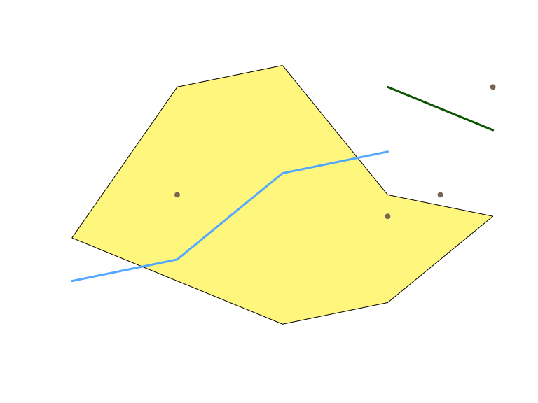
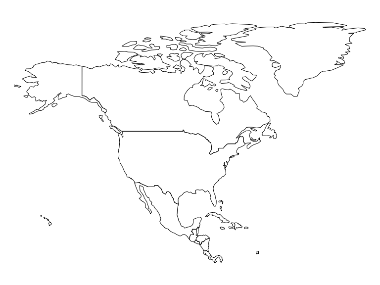
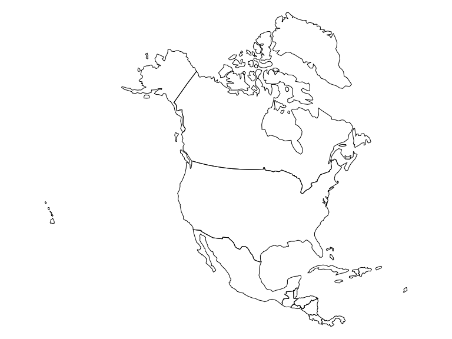
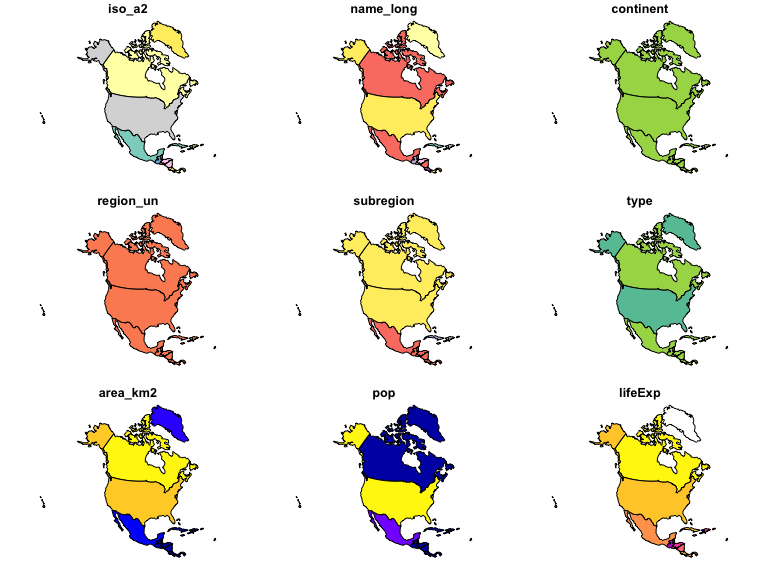
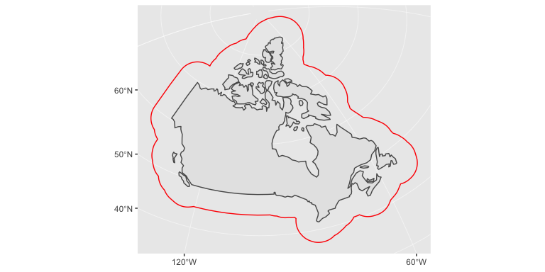
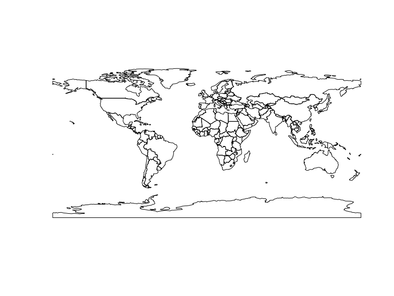
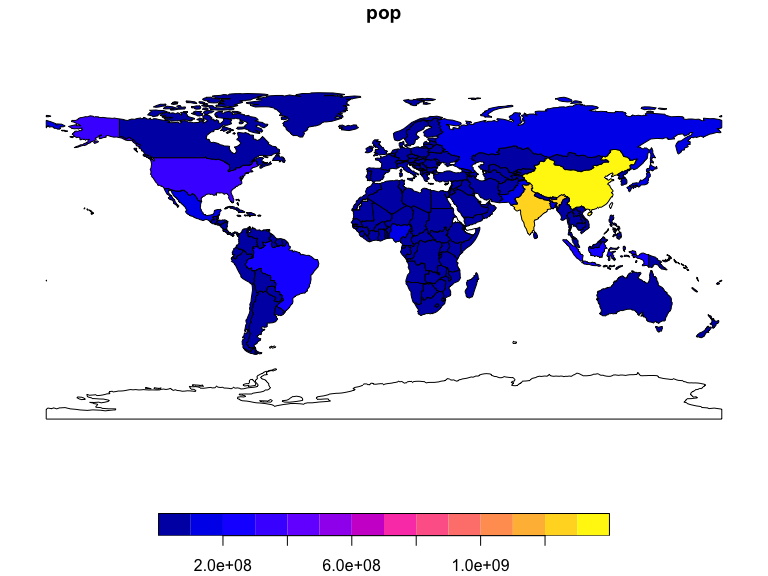
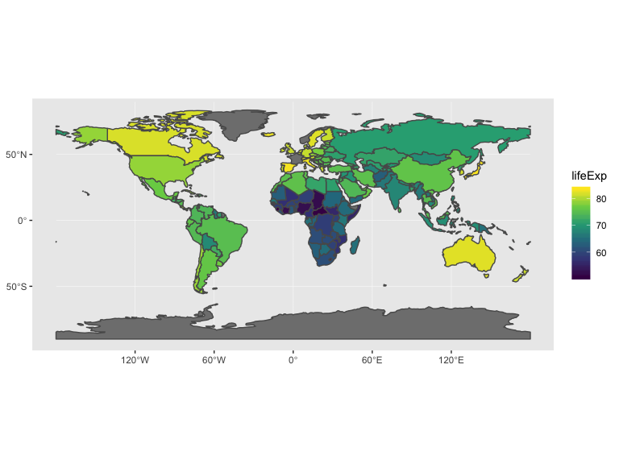

Start thinking about:
sp First major spatial data package/formatrgdal reading and writing spatial datargeos Interface to open-source geometry engine (GEOS)sf Spatial Features in the ‘tidyverse’raster raster (gridded) dataTypically an object in the real world, such as a building or a tree.
A forest stand can be a feature, a forest can be a feature, a city can be a feature. A satellite image pixel can be a feature, a complete image can be a feature too.

What information do we need to store in order to define points, lines, polygons in geographic space?
Features have a geometry describing where on Earth the feature is located, and they have attributes, which describe other properties.
A Tree:
Attributes:
All geometries composed of points. Points are coordinates in a 2-, 3- or 4-dimensional space. All points in a geometry have the same dimensionality. In addition to X and Y coordinates, there are two optional additional dimensions:
| type | description |
|---|---|
POINT |
a single point |
LINESTRING |
sequence of points connected by lines |
POLYGON |
sequence of points form a closed ring |
MULTIPOINT |
set of points |
MULTILINESTRING |
set of linestrings |
MULTIPOLYGON |
set of polygons |
GEOMETRYCOLLECTION |
set of geometries |
Some formats only include these (e.g. GeoJSON)
10 more geometries 10 are rare:
CIRCULARSTRINGCOMPOUNDCURVECURVEPOLYGONMULTICURVEMULTISURFACECURVESURFACEPOLYHEDRALSURFACETINTRIANGLEPackage sf represents simple features as native R objects.
All spatial functions and methods in sf prefixed by st_ (refering to spatial and temporal)
Simple features are implemented as R native data, using simple data structures (S3 classes, lists, matrix, vector).
Attributes typically stored in data.frame objects (or the very similar tbl_df), we will also store feature geometries in a data.frame column. Since geometries are not single-valued, they are put in a list-column, a list of length equal to the number of records in the data.frame, with each list element holding the simple feature geometry of that feature. The three classes used to represent simple features are:
There are currently two main approaches in R to handle geographic vector data.
sp packageFirst package to provide classes and methods for spatial data types in R is called sp. Provides classes and methods to create points, lines, polygons, and grids and to operate on them.
About 350 of the spatial analysis packages use the spatial data types that are implemented in sp i.e. they “depend” on the sp package and many more are indirectly dependent.
Many spatial R packages still depends on the sp package, therefore it is important to know how to convert sp to and from sf objects
Foundational structure for any spatial object in sp is the Spatial class. It has two “slots” (new-style S4 class objects in R have pre-defined components called slots):
Basic structure extended depending on the characteristics of the spatial object (point, line, polygon).
Line objects. A Line object is a collection of 2D coordinates and is generated out of a two-column matrix or a dataframe with a column for latitude and one for longitude. A Lines object is a list of one or more Line objects.Polygon objects. A Polygon object is a collection of 2D coordinates with equal first and last coordinates and is generated out of a two-column matrix or a dataframe with a column for latitude and one for longitude. A Polygons object is a list of one or more Polygon objects, for example islands belonging to the same country.A very simple Line object:
## Formal class 'Line' [package "sp"] with 1 slot
## ..@ coords: num [1:3, 1:2] 0.754 0.928 0.873 0.708 0.765 ...## [,1] [,2]
## [1,] 0.7537794 0.7075294
## [2,] 0.9281484 0.7646153
## [3,] 0.8729771 0.7240984A very simple Lines object:
## Formal class 'Lines' [package "sp"] with 2 slots
## ..@ Lines:List of 2
## .. ..$ :Formal class 'Line' [package "sp"] with 1 slot
## .. .. .. ..@ coords: num [1:3, 1:2] 0.754 0.928 0.873 0.708 0.765 ...
## .. ..$ :Formal class 'Line' [package "sp"] with 1 slot
## .. .. .. ..@ coords: num [1:3, 1:2] 0.754 0.928 0.873 0.708 0.765 ...
## ..@ ID : chr "a"Spatial* object (* stands for Points, Lines, or Polygons).Adds bounding box and the slot for the Coordinate Reference System or CRS. SpatialPoints can be directly generated out of the coordinates. SpatialLines and SpatialPolygons objects are generated using lists of Lines or Polygons objects respectively (more below).
See here for how to create a SpatialLines object:
## Formal class 'SpatialLines' [package "sp"] with 3 slots
## ..@ lines :List of 1
## .. ..$ :Formal class 'Lines' [package "sp"] with 2 slots
## .. .. .. ..@ Lines:List of 2
## .. .. .. .. ..$ :Formal class 'Line' [package "sp"] with 1 slot
## .. .. .. .. .. .. ..@ coords: num [1:3, 1:2] 0.754 0.928 0.873 0.708 0.765 ...
## .. .. .. .. ..$ :Formal class 'Line' [package "sp"] with 1 slot
## .. .. .. .. .. .. ..@ coords: num [1:3, 1:2] 0.754 0.928 0.873 0.708 0.765 ...
## .. .. .. ..@ ID : chr "a"
## ..@ bbox : num [1:2, 1:2] 0.754 0.708 0.928 0.765
## .. ..- attr(*, "dimnames")=List of 2
## .. .. ..$ : chr [1:2] "x" "y"
## .. .. ..$ : chr [1:2] "min" "max"
## ..@ proj4string:Formal class 'CRS' [package "sp"] with 1 slot
## .. .. ..@ projargs: chr NAAdd attribute data, which will turn your Spatial* object into a Spatial*DataFrame object. ID fields are here required to match the data frame row names.
Create a simple SpatialLinesDataframe:
dfr <- data.frame(id = "a", use = "road", cars_per_hour = 10) # note how we use the ID from above!
sp_lns_dfr <- SpatialLinesDataFrame(sp_lns, dfr, match.ID = "id")
str(sp_lns_dfr)## Formal class 'SpatialLinesDataFrame' [package "sp"] with 4 slots
## ..@ data :'data.frame': 1 obs. of 3 variables:
## .. ..$ id : Factor w/ 1 level "a": 1
## .. ..$ use : Factor w/ 1 level "road": 1
## .. ..$ cars_per_hour: num 10
## ..@ lines :List of 1
## .. ..$ :Formal class 'Lines' [package "sp"] with 2 slots
## .. .. .. ..@ Lines:List of 2
## .. .. .. .. ..$ :Formal class 'Line' [package "sp"] with 1 slot
## .. .. .. .. .. .. ..@ coords: num [1:3, 1:2] 0.754 0.928 0.873 0.708 0.765 ...
## .. .. .. .. ..$ :Formal class 'Line' [package "sp"] with 1 slot
## .. .. .. .. .. .. ..@ coords: num [1:3, 1:2] 0.754 0.928 0.873 0.708 0.765 ...
## .. .. .. ..@ ID : chr "a"
## ..@ bbox : num [1:2, 1:2] 0.754 0.708 0.928 0.765
## .. ..- attr(*, "dimnames")=List of 2
## .. .. ..$ : chr [1:2] "x" "y"
## .. .. ..$ : chr [1:2] "min" "max"
## ..@ proj4string:Formal class 'CRS' [package "sp"] with 1 slot
## .. .. ..@ projargs: chr NA| function | and what it does |
|---|---|
bbox() |
returns the bounding box coordinates |
proj4string() |
sets or retrieves projection attributes using the CRS object. |
CRS() |
creates an object of class of coordinate reference system arguments |
spplot() |
plots all the attributes |
coordinates() |
set or retrieve the spatial coordinates. |
over(a, b) |
used to retrieve the polygon or grid indices on a set of points |
spsample() |
sampling of spatial points within the spatial extent of objects |
sf packagesf implements a formal standard called “Simple Features” that specifies a storage and access model of spatial geometries (point, line, polygon). A feature geometry is called simple when it consists of points connected by straight line pieces, and does not intersect itself.
This standard has been adopted widely, not only by spatial databases such as PostGIS, but also more recent standards such as GeoJSON.
If you work with PostGis or GeoJSON you may have come across the WKT (well-known text) format, for example like these:
`POINT (30 10)
LINESTRING (30 10, 10 30, 40 40)
POLYGON ((30 10, 40 40, 20 40, 10 20, 30 10))`sf implements this standard natively in R. Data are structured and conceptualized very differently from the sp approach.
In sf spatial objects are stored as a simple data frame with a special column that contains the information for the geographic coordinates. That special column is a list with the same length as the number of rows in the data frame. Each of the individual list elements then can be of any length needed to hold the coordinates that correspond to an individual feature.
Geometric objects (simple features) can be created from a numeric vector, matrix or a list with the coordinates. They are called sfg objects for Simple Feature Geometry.
See here for an example of how a LINESTRING sfg object is created:
## [1] "XY" "LINESTRING" "sfg"In order to work our way towards a data frame for all features we create what is called an sfc object with all individual features, which stands for Simple Feature Collection. The sfc object also holds the bounding box and the projection information.
See here for an example of how a sfc object is created:
## Geometry set for 1 feature
## geometry type: LINESTRING
## dimension: XY
## bbox: xmin: 0.07378466 ymin: 0.06271271 xmax: 0.8883176 ymax: 0.9780073
## epsg (SRID): NA
## proj4string: NA## LINESTRING (0.07378466 0.9780073, 0.4339811 0.1...## [1] "sfc_LINESTRING" "sfc"We now combine the dataframe with the attributes and the simple feature collection. See here how its done.
## Simple feature collection with 1 feature and 3 fields
## geometry type: LINESTRING
## dimension: XY
## bbox: xmin: 0.07378466 ymin: 0.06271271 xmax: 0.8883176 ymax: 0.9780073
## epsg (SRID): NA
## proj4string: NA
## id use cars_per_hour lnstr_sfc
## 1 a road 10 LINESTRING (0.07378466 0.97...## [1] "sf" "data.frame"There are many methods available in the sf package, to find out use methods(class="sp")
ggplot release that will be able to read and plot the sf format without the need of conversion to a data frame, like the sp formatsp and sf are not only formats for spatial objects. Other spatial packages may use their own class definitions for spatial data (for example spatstat). Usuallly you can find functions that convert sp and increasingly sf objects to and from these formats.
## Formal class 'SpatialPolygonsDataFrame' [package "sp"] with 5 slots
## ..@ data :'data.frame': 177 obs. of 10 variables:
## .. ..$ iso_a2 : chr [1:177] "AF" "AO" "AL" "AE" ...
## .. ..$ name_long: chr [1:177] "Afghanistan" "Angola" "Albania" "United Arab Emirates" ...
## .. ..$ continent: chr [1:177] "Asia" "Africa" "Europe" "Asia" ...
## .. ..$ region_un: chr [1:177] "Asia" "Africa" "Europe" "Asia" ...
## .. ..$ subregion: chr [1:177] "Southern Asia" "Middle Africa" "Southern Europe" "Western Asia" ...
## .. ..$ type : chr [1:177] "Sovereign country" "Sovereign country" "Sovereign country" "Sovereign country" ...
## .. ..$ area_km2 : num [1:177] 652270 1245464 29695 79881 2784469 ...
## .. ..$ pop : num [1:177] 31627506 24227524 2893654 9086139 42980026 ...
## .. ..$ lifeExp : num [1:177] 60.4 52.3 77.8 77.4 76.2 ...
## .. ..$ gdpPercap: num [1:177] 1844 6956 10699 63831 18873 ...
## ..@ polygons :List of 177
## .. ..$ :Formal class 'Polygons' [package "sp"] with 5 slots
## .. .. .. ..@ Polygons :List of 1
## .. .. .. .. ..$ :Formal class 'Polygon' [package "sp"] with 5 slots
## .. .. .. .. .. .. ..@ labpt : num [1:2] 66.1 33.9
## .. .. .. .. .. .. ..@ area : num 63.6
## .. .. .. .. .. .. ..@ hole : logi FALSE
## .. .. .. .. .. .. ..@ ringDir: int 1
## .. .. .. .. .. .. ..@ coords : num [1:69, 1:2] 61.2 62.2 63 63.2 64 ...
## .. .. .. ..@ plotOrder: int 1
## .. .. .. ..@ labpt : num [1:2] 66.1 33.9
## .. .. .. ..@ ID : chr "1"
## .. .. .. ..@ area : num 63.6
## .. ..$ :Formal class 'Polygons' [package "sp"] with 5 slots
## .. .. .. ..@ Polygons :List of 2
## .. .. .. .. ..$ :Formal class 'Polygon' [package "sp"] with 5 slots
## .. .. .. .. .. .. ..@ labpt : num [1:2] 17.5 -12.3
## .. .. .. .. .. .. ..@ area : num 103
## .. .. .. .. .. .. ..@ hole : logi FALSE
## .. .. .. .. .. .. ..@ ringDir: int 1
## .. .. .. .. .. .. ..@ coords : num [1:66, 1:2] 16.3 16.6 16.9 17.1 17.5 ...
## .. .. .. .. ..$ :Formal class 'Polygon' [package "sp"] with 5 slots
## .. .. .. .. .. .. ..@ labpt : num [1:2] 12.38 -5.05
## .. .. .. .. .. .. ..@ area : num 0.653
## .. .. .. .. .. .. ..@ hole : logi FALSE
## .. .. .. .. .. .. ..@ ringDir: int 1
## .. .. .. .. .. .. ..@ coords : num [1:9, 1:2] 12.4 12.2 11.9 12.3 12.6 ...
## .. .. .. ..@ plotOrder: int [1:2] 1 2
## .. .. .. ..@ labpt : num [1:2] 17.5 -12.3
## .. .. .. ..@ ID : chr "2"
## .. .. .. ..@ area : num 104
## .. ..$ :Formal class 'Polygons' [package "sp"] with 5 slots
## .. .. .. ..@ Polygons :List of 1
## .. .. .. .. ..$ :Formal class 'Polygon' [package "sp"] with 5 slots
## .. .. .. .. .. .. ..@ labpt : num [1:2] 20 41.1
## .. .. .. .. .. .. ..@ area : num 3.19
## .. .. .. .. .. .. ..@ hole : logi FALSE
## .. .. .. .. .. .. ..@ ringDir: int 1
## .. .. .. .. .. .. ..@ coords : num [1:22, 1:2] 20.6 20.5 20.6 21 21 ...
## .. .. .. ..@ plotOrder: int 1
## .. .. .. ..@ labpt : num [1:2] 20 41.1
## .. .. .. ..@ ID : chr "3"
## .. .. .. ..@ area : num 3.19
## .. ..$ :Formal class 'Polygons' [package "sp"] with 5 slots
## .. .. .. ..@ Polygons :List of 1
## .. .. .. .. ..$ :Formal class 'Polygon' [package "sp"] with 5 slots
## .. .. .. .. .. .. ..@ labpt : num [1:2] 54.2 23.9
## .. .. .. .. .. .. ..@ area : num 7.1
## .. .. .. .. .. .. ..@ hole : logi FALSE
## .. .. .. .. .. .. ..@ ringDir: int 1
## .. .. .. .. .. .. ..@ coords : num [1:22, 1:2] 51.6 51.8 51.8 52.6 53.4 ...
## .. .. .. ..@ plotOrder: int 1
## .. .. .. ..@ labpt : num [1:2] 54.2 23.9
## .. .. .. ..@ ID : chr "4"
## .. .. .. ..@ area : num 7.1
## .. ..$ :Formal class 'Polygons' [package "sp"] with 5 slots
## .. .. .. ..@ Polygons :List of 2
## .. .. .. .. ..$ :Formal class 'Polygon' [package "sp"] with 5 slots
## .. .. .. .. .. .. ..@ labpt : num [1:2] -67.3 -54.4
## .. .. .. .. .. .. ..@ area : num 3.3
## .. .. .. .. .. .. ..@ hole : logi FALSE
## .. .. .. .. .. .. ..@ ringDir: int 1
## .. .. .. .. .. .. ..@ coords : num [1:11, 1:2] -65.5 -66.5 -67 -67.6 -68.6 ...
## .. .. .. .. ..$ :Formal class 'Polygon' [package "sp"] with 5 slots
## .. .. .. .. .. .. ..@ labpt : num [1:2] -65.1 -35.2
## .. .. .. .. .. .. ..@ area : num 276
## .. .. .. .. .. .. ..@ hole : logi FALSE
## .. .. .. .. .. .. ..@ ringDir: int 1
## .. .. .. .. .. .. ..@ coords : num [1:110, 1:2] -65 -64.4 -64 -62.8 -62.7 ...
## .. .. .. ..@ plotOrder: int [1:2] 2 1
## .. .. .. ..@ labpt : num [1:2] -65.1 -35.2
## .. .. .. ..@ ID : chr "5"
## .. .. .. ..@ area : num 279
## .. ..$ :Formal class 'Polygons' [package "sp"] with 5 slots
## .. .. .. ..@ Polygons :List of 1
## .. .. .. .. ..$ :Formal class 'Polygon' [package "sp"] with 5 slots
## .. .. .. .. .. .. ..@ labpt : num [1:2] 45 40.2
## .. .. .. .. .. .. ..@ area : num 3.03
## .. .. .. .. .. .. ..@ hole : logi FALSE
## .. .. .. .. .. .. ..@ ringDir: int 1
## .. .. .. .. .. .. ..@ coords : num [1:20, 1:2] 43.6 45 45.2 45.6 45.4 ...
## .. .. .. ..@ plotOrder: int 1
## .. .. .. ..@ labpt : num [1:2] 45 40.2
## .. .. .. ..@ ID : chr "6"
## .. .. .. ..@ area : num 3.03
## .. ..$ :Formal class 'Polygons' [package "sp"] with 5 slots
## .. .. .. ..@ Polygons :List of 8
## .. .. .. .. ..$ :Formal class 'Polygon' [package "sp"] with 5 slots
## .. .. .. .. .. .. ..@ labpt : num [1:2] -62.3 -80.5
## .. .. .. .. .. .. ..@ area : num 4.2
## .. .. .. .. .. .. ..@ hole : logi FALSE
## .. .. .. .. .. .. ..@ ringDir: int 1
## .. .. .. .. .. .. ..@ coords : num [1:13, 1:2] -59.6 -59.9 -60.2 -62.3 -64.5 ...
## .. .. .. .. ..$ :Formal class 'Polygon' [package "sp"] with 5 slots
## .. .. .. .. .. .. ..@ labpt : num [1:2] -161.4 -78.9
## .. .. .. .. .. .. ..@ area : num 3.72
## .. .. .. .. .. .. ..@ hole : logi FALSE
## .. .. .. .. .. .. ..@ ringDir: int 1
## .. .. .. .. .. .. ..@ coords : num [1:12, 1:2] -159 -161 -162 -163 -163 ...
## .. .. .. .. ..$ :Formal class 'Polygon' [package "sp"] with 5 slots
## .. .. .. .. .. .. ..@ labpt : num [1:2] -48 -79.6
## .. .. .. .. .. .. ..@ area : num 20.4
## .. .. .. .. .. .. ..@ hole : logi FALSE
## .. .. .. .. .. .. ..@ ringDir: int 1
## .. .. .. .. .. .. ..@ coords : num [1:22, 1:2] -45.2 -43.9 -43.5 -43.4 -43.3 ...
## .. .. .. .. ..$ :Formal class 'Polygon' [package "sp"] with 5 slots
## .. .. .. .. .. .. ..@ labpt : num [1:2] -120.9 -73.7
## .. .. .. .. .. .. ..@ area : num 1.54
## .. .. .. .. .. .. ..@ hole : logi FALSE
## .. .. .. .. .. .. ..@ ringDir: int 1
## .. .. .. .. .. .. ..@ coords : num [1:10, 1:2] -121 -120 -119 -119 -120 ...
## .. .. .. .. ..$ :Formal class 'Polygon' [package "sp"] with 5 slots
## .. .. .. .. .. .. ..@ labpt : num [1:2] -125.9 -73.6
## .. .. .. .. .. .. ..@ area : num 0.683
## .. .. .. .. .. .. ..@ hole : logi FALSE
## .. .. .. .. .. .. ..@ ringDir: int 1
## .. .. .. .. .. .. ..@ coords : num [1:8, 1:2] -126 -124 -125 -126 -127 ...
## .. .. .. .. ..$ :Formal class 'Polygon' [package "sp"] with 5 slots
## .. .. .. .. .. .. ..@ labpt : num [1:2] -99.5 -72.2
## .. .. .. .. .. .. ..@ area : num 3
## .. .. .. .. .. .. ..@ hole : logi FALSE
## .. .. .. .. .. .. ..@ ringDir: int 1
## .. .. .. .. .. .. ..@ coords : num [1:14, 1:2] -99 -97.9 -96.8 -96.2 -97 ...
## .. .. .. .. ..$ :Formal class 'Polygon' [package "sp"] with 5 slots
## .. .. .. .. .. .. ..@ labpt : num [1:2] -71 -71.1
## .. .. .. .. .. .. ..@ area : num 12.7
## .. .. .. .. .. .. ..@ hole : logi FALSE
## .. .. .. .. .. .. ..@ ringDir: int 1
## .. .. .. .. .. .. ..@ coords : num [1:26, 1:2] -68.5 -68.3 -68.5 -68.8 -70 ...
## .. .. .. .. ..$ :Formal class 'Polygon' [package "sp"] with 5 slots
## .. .. .. .. .. .. ..@ labpt : num [1:2] 21.3 -80.5
## .. .. .. .. .. .. ..@ area : num 5983
## .. .. .. .. .. .. ..@ hole : logi FALSE
## .. .. .. .. .. .. ..@ ringDir: int 1
## .. .. .. .. .. .. ..@ coords : num [1:556, 1:2] -58.6 -59 -59.8 -60.6 -61.3 ...
## .. .. .. ..@ plotOrder: int [1:8] 8 3 7 1 2 6 4 5
## .. .. .. ..@ labpt : num [1:2] 21.3 -80.5
## .. .. .. ..@ ID : chr "7"
## .. .. .. ..@ area : num 6029
## .. ..$ :Formal class 'Polygons' [package "sp"] with 5 slots
## .. .. .. ..@ Polygons :List of 1
## .. .. .. .. ..$ :Formal class 'Polygon' [package "sp"] with 5 slots
## .. .. .. .. .. .. ..@ labpt : num [1:2] 69.5 -49.3
## .. .. .. .. .. .. ..@ area : num 1.43
## .. .. .. .. .. .. ..@ hole : logi FALSE
## .. .. .. .. .. .. ..@ ringDir: int 1
## .. .. .. .. .. .. ..@ coords : num [1:9, 1:2] 68.9 69.6 70.5 70.6 70.3 ...
## .. .. .. ..@ plotOrder: int 1
## .. .. .. ..@ labpt : num [1:2] 69.5 -49.3
## .. .. .. ..@ ID : chr "8"
## .. .. .. ..@ area : num 1.43
## .. ..$ :Formal class 'Polygons' [package "sp"] with 5 slots
## .. .. .. ..@ Polygons :List of 2
## .. .. .. .. ..$ :Formal class 'Polygon' [package "sp"] with 5 slots
## .. .. .. .. .. .. ..@ labpt : num [1:2] 147 -42
## .. .. .. .. .. .. ..@ area : num 7.18
## .. .. .. .. .. .. ..@ hole : logi FALSE
## .. .. .. .. .. .. ..@ ringDir: int 1
## .. .. .. .. .. .. ..@ coords : num [1:17, 1:2] 145 146 147 148 148 ...
## .. .. .. .. ..$ :Formal class 'Polygon' [package "sp"] with 5 slots
## .. .. .. .. .. .. ..@ labpt : num [1:2] 134.4 -25.6
## .. .. .. .. .. .. ..@ area : num 688
## .. .. .. .. .. .. ..@ hole : logi FALSE
## .. .. .. .. .. .. ..@ ringDir: int 1
## .. .. .. .. .. .. ..@ coords : num [1:224, 1:2] 144 144 145 145 145 ...
## .. .. .. ..@ plotOrder: int [1:2] 2 1
## .. .. .. ..@ labpt : num [1:2] 134.4 -25.6
## .. .. .. ..@ ID : chr "9"
## .. .. .. ..@ area : num 696
## .. ..$ :Formal class 'Polygons' [package "sp"] with 5 slots
## .. .. .. ..@ Polygons :List of 1
## .. .. .. .. ..$ :Formal class 'Polygon' [package "sp"] with 5 slots
## .. .. .. .. .. .. ..@ labpt : num [1:2] 14.1 47.6
## .. .. .. .. .. .. ..@ area : num 10.2
## .. .. .. .. .. .. ..@ hole : logi FALSE
## .. .. .. .. .. .. ..@ ringDir: int 1
## .. .. .. .. .. .. ..@ coords : num [1:37, 1:2] 17 16.9 16.3 16.5 16.2 ...
## .. .. .. ..@ plotOrder: int 1
## .. .. .. ..@ labpt : num [1:2] 14.1 47.6
## .. .. .. ..@ ID : chr "10"
## .. .. .. ..@ area : num 10.2
## .. ..$ :Formal class 'Polygons' [package "sp"] with 5 slots
## .. .. .. ..@ Polygons :List of 2
## .. .. .. .. ..$ :Formal class 'Polygon' [package "sp"] with 5 slots
## .. .. .. .. .. .. ..@ labpt : num [1:2] 45.4 39.2
## .. .. .. .. .. .. ..@ area : num 0.546
## .. .. .. .. .. .. ..@ hole : logi FALSE
## .. .. .. .. .. .. ..@ ringDir: int 1
## .. .. .. .. .. .. ..@ coords : num [1:9, 1:2] 45 45.3 45.7 45.7 46.1 ...
## .. .. .. .. ..$ :Formal class 'Polygon' [package "sp"] with 5 slots
## .. .. .. .. .. .. ..@ labpt : num [1:2] 47.7 40.3
## .. .. .. .. .. .. ..@ area : num 9.1
## .. .. .. .. .. .. ..@ hole : logi FALSE
## .. .. .. .. .. .. ..@ ringDir: int 1
## .. .. .. .. .. .. ..@ coords : num [1:35, 1:2] 47.4 47.8 48 48.6 49.1 ...
## .. .. .. ..@ plotOrder: int [1:2] 2 1
## .. .. .. ..@ labpt : num [1:2] 47.7 40.3
## .. .. .. ..@ ID : chr "11"
## .. .. .. ..@ area : num 9.64
## .. ..$ :Formal class 'Polygons' [package "sp"] with 5 slots
## .. .. .. ..@ Polygons :List of 1
## .. .. .. .. ..$ :Formal class 'Polygon' [package "sp"] with 5 slots
## .. .. .. .. .. .. ..@ labpt : num [1:2] 29.91 -3.38
## .. .. .. .. .. .. ..@ area : num 2.14
## .. .. .. .. .. .. ..@ hole : logi FALSE
## .. .. .. .. .. .. ..@ ringDir: int 1
## .. .. .. .. .. .. ..@ coords : num [1:13, 1:2] 29.3 29.3 29 29.6 29.9 ...
## .. .. .. ..@ plotOrder: int 1
## .. .. .. ..@ labpt : num [1:2] 29.91 -3.38
## .. .. .. ..@ ID : chr "12"
## .. .. .. ..@ area : num 2.14
## .. ..$ :Formal class 'Polygons' [package "sp"] with 5 slots
## .. .. .. ..@ Polygons :List of 1
## .. .. .. .. ..$ :Formal class 'Polygon' [package "sp"] with 5 slots
## .. .. .. .. .. .. ..@ labpt : num [1:2] 4.58 50.65
## .. .. .. .. .. .. ..@ area : num 3.83
## .. .. .. .. .. .. ..@ hole : logi FALSE
## .. .. .. .. .. .. ..@ ringDir: int 1
## .. .. .. .. .. .. ..@ coords : num [1:15, 1:2] 3.31 4.05 4.97 5.61 6.16 ...
## .. .. .. ..@ plotOrder: int 1
## .. .. .. ..@ labpt : num [1:2] 4.58 50.65
## .. .. .. ..@ ID : chr "13"
## .. .. .. ..@ area : num 3.83
## .. ..$ :Formal class 'Polygons' [package "sp"] with 5 slots
## .. .. .. ..@ Polygons :List of 1
## .. .. .. .. ..$ :Formal class 'Polygon' [package "sp"] with 5 slots
## .. .. .. .. .. .. ..@ labpt : num [1:2] 2.34 9.65
## .. .. .. .. .. .. ..@ area : num 9.64
## .. .. .. .. .. .. ..@ hole : logi FALSE
## .. .. .. .. .. .. ..@ ringDir: int 1
## .. .. .. .. .. .. ..@ coords : num [1:25, 1:2] 2.69 1.87 1.62 1.66 1.46 ...
## .. .. .. ..@ plotOrder: int 1
## .. .. .. ..@ labpt : num [1:2] 2.34 9.65
## .. .. .. ..@ ID : chr "14"
## .. .. .. ..@ area : num 9.64
## .. ..$ :Formal class 'Polygons' [package "sp"] with 5 slots
## .. .. .. ..@ Polygons :List of 1
## .. .. .. .. ..$ :Formal class 'Polygon' [package "sp"] with 5 slots
## .. .. .. .. .. .. ..@ labpt : num [1:2] -1.78 12.31
## .. .. .. .. .. .. ..@ area : num 22.6
## .. .. .. .. .. .. ..@ hole : logi FALSE
## .. .. .. .. .. .. ..@ ringDir: int 1
## .. .. .. .. .. .. ..@ coords : num [1:39, 1:2] -2.83 -3.51 -3.98 -4.33 -4.78 ...
## .. .. .. ..@ plotOrder: int 1
## .. .. .. ..@ labpt : num [1:2] -1.78 12.31
## .. .. .. ..@ ID : chr "15"
## .. .. .. ..@ area : num 22.6
## .. ..$ :Formal class 'Polygons' [package "sp"] with 5 slots
## .. .. .. ..@ Polygons :List of 1
## .. .. .. .. ..$ :Formal class 'Polygon' [package "sp"] with 5 slots
## .. .. .. .. .. .. ..@ labpt : num [1:2] 90.3 23.8
## .. .. .. .. .. .. ..@ area : num 11.9
## .. .. .. .. .. .. ..@ hole : logi FALSE
## .. .. .. .. .. .. ..@ ringDir: int 1
## .. .. .. .. .. .. ..@ coords : num [1:36, 1:2] 92.7 92.7 92.3 92.4 92.1 ...
## .. .. .. ..@ plotOrder: int 1
## .. .. .. ..@ labpt : num [1:2] 90.3 23.8
## .. .. .. ..@ ID : chr "16"
## .. .. .. ..@ area : num 11.9
## .. ..$ :Formal class 'Polygons' [package "sp"] with 5 slots
## .. .. .. ..@ Polygons :List of 1
## .. .. .. .. ..$ :Formal class 'Polygon' [package "sp"] with 5 slots
## .. .. .. .. .. .. ..@ labpt : num [1:2] 25.2 42.8
## .. .. .. .. .. .. ..@ area : num 12.1
## .. .. .. .. .. .. ..@ hole : logi FALSE
## .. .. .. .. .. .. ..@ ringDir: int 1
## .. .. .. .. .. .. ..@ coords : num [1:28, 1:2] 22.7 22.9 23.3 24.1 25.6 ...
## .. .. .. ..@ plotOrder: int 1
## .. .. .. ..@ labpt : num [1:2] 25.2 42.8
## .. .. .. ..@ ID : chr "17"
## .. .. .. ..@ area : num 12.1
## .. ..$ :Formal class 'Polygons' [package "sp"] with 5 slots
## .. .. .. ..@ Polygons :List of 3
## .. .. .. .. ..$ :Formal class 'Polygon' [package "sp"] with 5 slots
## .. .. .. .. .. .. ..@ labpt : num [1:2] -77.9 24.5
## .. .. .. .. .. .. ..@ area : num 0.721
## .. .. .. .. .. .. ..@ hole : logi FALSE
## .. .. .. .. .. .. ..@ ringDir: int 1
## .. .. .. .. .. .. ..@ coords : num [1:8, 1:2] -77.5 -77.8 -78 -78.4 -78.2 ...
## .. .. .. .. ..$ :Formal class 'Polygon' [package "sp"] with 5 slots
## .. .. .. .. .. .. ..@ labpt : num [1:2] -78.4 26.7
## .. .. .. .. .. .. ..@ area : num 0.388
## .. .. .. .. .. .. ..@ hole : logi FALSE
## .. .. .. .. .. .. ..@ ringDir: int 1
## .. .. .. .. .. .. ..@ coords : num [1:6, 1:2] -77.8 -78.9 -79 -78.5 -77.9 ...
## .. .. .. .. ..$ :Formal class 'Polygon' [package "sp"] with 5 slots
## .. .. .. .. .. .. ..@ labpt : num [1:2] -77.3 26.5
## .. .. .. .. .. .. ..@ area : num 0.29
## .. .. .. .. .. .. ..@ hole : logi FALSE
## .. .. .. .. .. .. ..@ ringDir: int 1
## .. .. .. .. .. .. ..@ coords : num [1:7, 1:2] -77 -77.2 -77.4 -77.3 -77.8 ...
## .. .. .. ..@ plotOrder: int [1:3] 1 2 3
## .. .. .. ..@ labpt : num [1:2] -77.9 24.5
## .. .. .. ..@ ID : chr "18"
## .. .. .. ..@ area : num 1.4
## .. ..$ :Formal class 'Polygons' [package "sp"] with 5 slots
## .. .. .. ..@ Polygons :List of 1
## .. .. .. .. ..$ :Formal class 'Polygon' [package "sp"] with 5 slots
## .. .. .. .. .. .. ..@ labpt : num [1:2] 17.8 44.2
## .. .. .. .. .. .. ..@ area : num 5.7
## .. .. .. .. .. .. ..@ hole : logi FALSE
## .. .. .. .. .. .. ..@ ringDir: int 1
## .. .. .. .. .. .. ..@ coords : num [1:22, 1:2] 19 19.4 19.1 19.6 19.5 ...
## .. .. .. ..@ plotOrder: int 1
## .. .. .. ..@ labpt : num [1:2] 17.8 44.2
## .. .. .. ..@ ID : chr "19"
## .. .. .. ..@ area : num 5.7
## .. ..$ :Formal class 'Polygons' [package "sp"] with 5 slots
## .. .. .. ..@ Polygons :List of 1
## .. .. .. .. ..$ :Formal class 'Polygon' [package "sp"] with 5 slots
## .. .. .. .. .. .. ..@ labpt : num [1:2] 28 53.5
## .. .. .. .. .. .. ..@ area : num 28.3
## .. .. .. .. .. .. ..@ hole : logi FALSE
## .. .. .. .. .. .. ..@ ringDir: int 1
## .. .. .. .. .. .. ..@ coords : num [1:44, 1:2] 23.5 24.5 25.5 25.8 26.6 ...
## .. .. .. ..@ plotOrder: int 1
## .. .. .. ..@ labpt : num [1:2] 28 53.5
## .. .. .. ..@ ID : chr "20"
## .. .. .. ..@ area : num 28.3
## .. ..$ :Formal class 'Polygons' [package "sp"] with 5 slots
## .. .. .. ..@ Polygons :List of 1
## .. .. .. .. ..$ :Formal class 'Polygon' [package "sp"] with 5 slots
## .. .. .. .. .. .. ..@ labpt : num [1:2] -88.7 17.2
## .. .. .. .. .. .. ..@ area : num 1.87
## .. .. .. .. .. .. ..@ hole : logi FALSE
## .. .. .. .. .. .. ..@ ringDir: int 1
## .. .. .. .. .. .. ..@ coords : num [1:20, 1:2] -89.1 -89.2 -89 -88.8 -88.5 ...
## .. .. .. ..@ plotOrder: int 1
## .. .. .. ..@ labpt : num [1:2] -88.7 17.2
## .. .. .. ..@ ID : chr "21"
## .. .. .. ..@ area : num 1.87
## .. ..$ :Formal class 'Polygons' [package "sp"] with 5 slots
## .. .. .. ..@ Polygons :List of 1
## .. .. .. .. ..$ :Formal class 'Polygon' [package "sp"] with 5 slots
## .. .. .. .. .. .. ..@ labpt : num [1:2] -64.6 -16.7
## .. .. .. .. .. .. ..@ area : num 92.1
## .. .. .. .. .. .. ..@ hole : logi FALSE
## .. .. .. .. .. .. ..@ ringDir: int 1
## .. .. .. .. .. .. ..@ coords : num [1:60, 1:2] -62.8 -64 -64.4 -65 -66.3 ...
## .. .. .. ..@ plotOrder: int 1
## .. .. .. ..@ labpt : num [1:2] -64.6 -16.7
## .. .. .. ..@ ID : chr "22"
## .. .. .. ..@ area : num 92.1
## .. ..$ :Formal class 'Polygons' [package "sp"] with 5 slots
## .. .. .. ..@ Polygons :List of 1
## .. .. .. .. ..$ :Formal class 'Polygon' [package "sp"] with 5 slots
## .. .. .. .. .. .. ..@ labpt : num [1:2] -53.1 -10.8
## .. .. .. .. .. .. ..@ area : num 710
## .. .. .. .. .. .. ..@ hole : logi FALSE
## .. .. .. .. .. .. ..@ ringDir: int 1
## .. .. .. .. .. .. ..@ coords : num [1:203, 1:2] -57.6 -56.3 -55.2 -54.5 -53.6 ...
## .. .. .. ..@ plotOrder: int 1
## .. .. .. ..@ labpt : num [1:2] -53.1 -10.8
## .. .. .. ..@ ID : chr "23"
## .. .. .. ..@ area : num 710
## .. ..$ :Formal class 'Polygons' [package "sp"] with 5 slots
## .. .. .. ..@ Polygons :List of 1
## .. .. .. .. ..$ :Formal class 'Polygon' [package "sp"] with 5 slots
## .. .. .. .. .. .. ..@ labpt : num [1:2] 114.92 4.69
## .. .. .. .. .. .. ..@ area : num 0.872
## .. .. .. .. .. .. ..@ hole : logi FALSE
## .. .. .. .. .. .. ..@ ringDir: int 1
## .. .. .. .. .. .. ..@ coords : num [1:8, 1:2] 114 115 115 115 115 ...
## .. .. .. ..@ plotOrder: int 1
## .. .. .. ..@ labpt : num [1:2] 114.92 4.69
## .. .. .. ..@ ID : chr "24"
## .. .. .. ..@ area : num 0.872
## .. ..$ :Formal class 'Polygons' [package "sp"] with 5 slots
## .. .. .. ..@ Polygons :List of 1
## .. .. .. .. ..$ :Formal class 'Polygon' [package "sp"] with 5 slots
## .. .. .. .. .. .. ..@ labpt : num [1:2] 90.5 27.4
## .. .. .. .. .. .. ..@ area : num 3.59
## .. .. .. .. .. .. ..@ hole : logi FALSE
## .. .. .. .. .. .. ..@ ringDir: int 1
## .. .. .. .. .. .. ..@ coords : num [1:13, 1:2] 91.7 92.1 92 91.2 90.4 ...
## .. .. .. ..@ plotOrder: int 1
## .. .. .. ..@ labpt : num [1:2] 90.5 27.4
## .. .. .. ..@ ID : chr "25"
## .. .. .. ..@ area : num 3.59
## .. ..$ :Formal class 'Polygons' [package "sp"] with 5 slots
## .. .. .. ..@ Polygons :List of 1
## .. .. .. .. ..$ :Formal class 'Polygon' [package "sp"] with 5 slots
## .. .. .. .. .. .. ..@ labpt : num [1:2] 23.8 -22.1
## .. .. .. .. .. .. ..@ area : num 51.8
## .. .. .. .. .. .. ..@ hole : logi FALSE
## .. .. .. .. .. .. ..@ ringDir: int 1
## .. .. .. .. .. .. ..@ coords : num [1:40, 1:2] 25.6 25.9 26.2 27.3 27.7 ...
## .. .. .. ..@ plotOrder: int 1
## .. .. .. ..@ labpt : num [1:2] 23.8 -22.1
## .. .. .. ..@ ID : chr "26"
## .. .. .. ..@ area : num 51.8
## .. ..$ :Formal class 'Polygons' [package "sp"] with 5 slots
## .. .. .. ..@ Polygons :List of 1
## .. .. .. .. ..$ :Formal class 'Polygon' [package "sp"] with 5 slots
## .. .. .. .. .. .. ..@ labpt : num [1:2] 20.37 6.54
## .. .. .. .. .. .. ..@ area : num 50.9
## .. .. .. .. .. .. ..@ hole : logi FALSE
## .. .. .. .. .. .. ..@ ringDir: int 1
## .. .. .. .. .. .. ..@ coords : num [1:62, 1:2] 15.3 16.1 16.3 16.5 16.7 ...
## .. .. .. ..@ plotOrder: int 1
## .. .. .. ..@ labpt : num [1:2] 20.37 6.54
## .. .. .. ..@ ID : chr "27"
## .. .. .. ..@ area : num 50.9
## .. ..$ :Formal class 'Polygons' [package "sp"] with 5 slots
## .. .. .. ..@ Polygons :List of 30
## .. .. .. .. ..$ :Formal class 'Polygon' [package "sp"] with 5 slots
## .. .. .. .. .. .. ..@ labpt : num [1:2] -63.3 46.4
## .. .. .. .. .. .. ..@ area : num 0.873
## .. .. .. .. .. .. ..@ hole : logi FALSE
## .. .. .. .. .. .. ..@ ringDir: int 1
## .. .. .. .. .. .. ..@ coords : num [1:9, 1:2] -63.7 -62.9 -62 -62.5 -62.9 ...
## .. .. .. .. ..$ :Formal class 'Polygon' [package "sp"] with 5 slots
## .. .. .. .. .. .. ..@ labpt : num [1:2] -63.1 49.5
## .. .. .. .. .. .. ..@ area : num 0.97
## .. .. .. .. .. .. ..@ hole : logi FALSE
## .. .. .. .. .. .. ..@ ringDir: int 1
## .. .. .. .. .. .. ..@ coords : num [1:8, 1:2] -61.8 -62.3 -63.6 -64.5 -64.2 ...
## .. .. .. .. ..$ :Formal class 'Polygon' [package "sp"] with 5 slots
## .. .. .. .. .. .. ..@ labpt : num [1:2] -126 49.6
## .. .. .. .. .. .. ..@ area : num 4.06
## .. .. .. .. .. .. ..@ hole : logi FALSE
## .. .. .. .. .. .. ..@ ringDir: int 1
## .. .. .. .. .. .. ..@ coords : num [1:16, 1:2] -124 -124 -126 -126 -127 ...
## .. .. .. .. ..$ :Formal class 'Polygon' [package "sp"] with 5 slots
## .. .. .. .. .. .. ..@ labpt : num [1:2] -56 48.7
## .. .. .. .. .. .. ..@ area : num 15.2
## .. .. .. .. .. .. ..@ hole : logi FALSE
## .. .. .. .. .. .. ..@ ringDir: int 1
## .. .. .. .. .. .. ..@ coords : num [1:33, 1:2] -56.1 -56.8 -56.1 -55.5 -55.8 ...
## .. .. .. .. ..$ :Formal class 'Polygon' [package "sp"] with 5 slots
## .. .. .. .. .. .. ..@ labpt : num [1:2] -132.3 53.4
## .. .. .. .. .. .. ..@ area : num 1.57
## .. .. .. .. .. .. ..@ hole : logi FALSE
## .. .. .. .. .. .. ..@ ringDir: int 1
## .. .. .. .. .. .. ..@ coords : num [1:11, 1:2] -133 -133 -132 -132 -131 ...
## .. .. .. .. ..$ :Formal class 'Polygon' [package "sp"] with 5 slots
## .. .. .. .. .. .. ..@ labpt : num [1:2] -79.8 62
## .. .. .. .. .. .. ..@ area : num 0.532
## .. .. .. .. .. .. ..@ hole : logi FALSE
## .. .. .. .. .. .. ..@ ringDir: int 1
## .. .. .. .. .. .. ..@ coords : num [1:8, 1:2] -79.3 -79.7 -80.1 -80.4 -80.3 ...
## .. .. .. .. ..$ :Formal class 'Polygon' [package "sp"] with 5 slots
## .. .. .. .. .. .. ..@ labpt : num [1:2] -83 62.6
## .. .. .. .. .. .. ..@ area : num 1.04
## .. .. .. .. .. .. ..@ hole : logi FALSE
## .. .. .. .. .. .. ..@ ringDir: int 1
## .. .. .. .. .. .. ..@ coords : num [1:7, 1:2] -81.9 -83.1 -83.8 -84 -83.3 ...
## .. .. .. .. ..$ :Formal class 'Polygon' [package "sp"] with 5 slots
## .. .. .. .. .. .. ..@ labpt : num [1:2] -84.1 64.3
## .. .. .. .. .. .. ..@ area : num 7.97
## .. .. .. .. .. .. ..@ hole : logi FALSE
## .. .. .. .. .. .. ..@ ringDir: int 1
## .. .. .. .. .. .. ..@ coords : num [1:20, 1:2] -85.2 -85 -84.5 -83.9 -82.8 ...
## .. .. .. .. ..$ :Formal class 'Polygon' [package "sp"] with 5 slots
## .. .. .. .. .. .. ..@ labpt : num [1:2] -76.2 67.7
## .. .. .. .. .. .. ..@ area : num 1.92
## .. .. .. .. .. .. ..@ hole : logi FALSE
## .. .. .. .. .. .. ..@ ringDir: int 1
## .. .. .. .. .. .. ..@ coords : num [1:9, 1:2] -75.9 -77 -77.2 -76.8 -75.9 ...
## .. .. .. .. ..$ :Formal class 'Polygon' [package "sp"] with 5 slots
## .. .. .. .. .. .. ..@ labpt : num [1:2] -97.6 69.4
## .. .. .. .. .. .. ..@ area : num 2.94
## .. .. .. .. .. .. ..@ hole : logi FALSE
## .. .. .. .. .. .. ..@ ringDir: int 1
## .. .. .. .. .. .. ..@ coords : num [1:11, 1:2] -95.6 -96.3 -97.6 -98.4 -99.8 ...
## .. .. .. .. ..$ :Formal class 'Polygon' [package "sp"] with 5 slots
## .. .. .. .. .. .. ..@ labpt : num [1:2] -101.6 57.7
## .. .. .. .. .. .. ..@ area : num 1281
## .. .. .. .. .. .. ..@ hole : logi FALSE
## .. .. .. .. .. .. ..@ ringDir: int 1
## .. .. .. .. .. .. ..@ coords : num [1:272, 1:2] -90.5 -90.6 -89.2 -88 -88.3 ...
## .. .. .. .. ..$ :Formal class 'Polygon' [package "sp"] with 5 slots
## .. .. .. .. .. .. ..@ labpt : num [1:2] -110.5 70.8
## .. .. .. .. .. .. ..@ area : num 54.4
## .. .. .. .. .. .. ..@ hole : logi FALSE
## .. .. .. .. .. .. ..@ ringDir: int 1
## .. .. .. .. .. .. ..@ coords : num [1:45, 1:2] -114 -115 -112 -111 -110 ...
## .. .. .. .. ..$ :Formal class 'Polygon' [package "sp"] with 5 slots
## .. .. .. .. .. .. ..@ labpt : num [1:2] -105.6 73.3
## .. .. .. .. .. .. ..@ area : num 1.16
## .. .. .. .. .. .. ..@ hole : logi FALSE
## .. .. .. .. .. .. ..@ ringDir: int 1
## .. .. .. .. .. .. ..@ coords : num [1:6, 1:2] -104 -105 -107 -107 -105 ...
## .. .. .. .. ..$ :Formal class 'Polygon' [package "sp"] with 5 slots
## .. .. .. .. .. .. ..@ labpt : num [1:2] -78.8 73.2
## .. .. .. .. .. .. ..@ area : num 3.15
## .. .. .. .. .. .. ..@ hole : logi FALSE
## .. .. .. .. .. .. ..@ ringDir: int 1
## .. .. .. .. .. .. ..@ coords : num [1:11, 1:2] -76.3 -76.3 -77.3 -78.4 -79.5 ...
## .. .. .. .. ..$ :Formal class 'Polygon' [package "sp"] with 5 slots
## .. .. .. .. .. .. ..@ labpt : num [1:2] -74.9 68.6
## .. .. .. .. .. .. ..@ area : num 118
## .. .. .. .. .. .. ..@ hole : logi FALSE
## .. .. .. .. .. .. ..@ ringDir: int 1
## .. .. .. .. .. .. ..@ coords : num [1:73, 1:2] -86.6 -85.8 -84.9 -82.3 -80.6 ...
## .. .. .. .. ..$ :Formal class 'Polygon' [package "sp"] with 5 slots
## .. .. .. .. .. .. ..@ labpt : num [1:2] -99.2 72.6
## .. .. .. .. .. .. ..@ area : num 9.4
## .. .. .. .. .. .. ..@ hole : logi FALSE
## .. .. .. .. .. .. ..@ ringDir: int 1
## .. .. .. .. .. .. ..@ coords : num [1:15, 1:2] -100.4 -99.2 -97.4 -97.1 -98.1 ...
## .. .. .. .. ..$ :Formal class 'Polygon' [package "sp"] with 5 slots
## .. .. .. .. .. .. ..@ labpt : num [1:2] -93.8 73.3
## .. .. .. .. .. .. ..@ area : num 7.12
## .. .. .. .. .. .. ..@ hole : logi FALSE
## .. .. .. .. .. .. ..@ ringDir: int 1
## .. .. .. .. .. .. ..@ coords : num [1:11, 1:2] -93.2 -94.3 -95.4 -96 -96 ...
## .. .. .. .. ..$ :Formal class 'Polygon' [package "sp"] with 5 slots
## .. .. .. .. .. .. ..@ labpt : num [1:2] -121.5 72.9
## .. .. .. .. .. .. ..@ area : num 20.1
## .. .. .. .. .. .. ..@ hole : logi FALSE
## .. .. .. .. .. .. ..@ ringDir: int 1
## .. .. .. .. .. .. ..@ coords : num [1:17, 1:2] -120 -123 -124 -126 -125 ...
## .. .. .. .. ..$ :Formal class 'Polygon' [package "sp"] with 5 slots
## .. .. .. .. .. .. ..@ labpt : num [1:2] -95.1 75.1
## .. .. .. .. .. .. ..@ area : num 2.18
## .. .. .. .. .. .. ..@ hole : logi FALSE
## .. .. .. .. .. .. ..@ ringDir: int 1
## .. .. .. .. .. .. ..@ coords : num [1:8, 1:2] -93.6 -94.2 -95.6 -96.8 -96.3 ...
## .. .. .. .. ..$ :Formal class 'Polygon' [package "sp"] with 5 slots
## .. .. .. .. .. .. ..@ labpt : num [1:2] -99.8 75.8
## .. .. .. .. .. .. ..@ area : num 6.11
## .. .. .. .. .. .. ..@ hole : logi FALSE
## .. .. .. .. .. .. ..@ ringDir: int 1
## .. .. .. .. .. .. ..@ coords : num [1:13, 1:2] -98.5 -97.7 -97.7 -98.2 -99.8 ...
## .. .. .. .. ..$ :Formal class 'Polygon' [package "sp"] with 5 slots
## .. .. .. .. .. .. ..@ labpt : num [1:2] -111.6 75.5
## .. .. .. .. .. .. ..@ area : num 14.3
## .. .. .. .. .. .. ..@ hole : logi FALSE
## .. .. .. .. .. .. ..@ ringDir: int 1
## .. .. .. .. .. .. ..@ coords : num [1:22, 1:2] -108 -108 -107 -106 -106 ...
## .. .. .. .. ..$ :Formal class 'Polygon' [package "sp"] with 5 slots
## .. .. .. .. .. .. ..@ labpt : num [1:2] -88.1 75.4
## .. .. .. .. .. .. ..@ area : num 19.2
## .. .. .. .. .. .. ..@ hole : logi FALSE
## .. .. .. .. .. .. ..@ ringDir: int 1
## .. .. .. .. .. .. ..@ coords : num [1:28, 1:2] -94.7 -93.6 -91.6 -90.7 -91 ...
## .. .. .. .. ..$ :Formal class 'Polygon' [package "sp"] with 5 slots
## .. .. .. .. .. .. ..@ labpt : num [1:2] -119.2 76.8
## .. .. .. .. .. .. ..@ area : num 6.08
## .. .. .. .. .. .. ..@ hole : logi FALSE
## .. .. .. .. .. .. ..@ ringDir: int 1
## .. .. .. .. .. .. ..@ coords : num [1:12, 1:2] -116 -116 -117 -118 -120 ...
## .. .. .. .. ..$ :Formal class 'Polygon' [package "sp"] with 5 slots
## .. .. .. .. .. .. ..@ labpt : num [1:2] -95.1 77.7
## .. .. .. .. .. .. ..@ area : num 0.711
## .. .. .. .. .. .. ..@ hole : logi FALSE
## .. .. .. .. .. .. ..@ ringDir: int 1
## .. .. .. .. .. .. ..@ coords : num [1:7, 1:2] -93.8 -94.3 -96.2 -96.4 -94.4 ...
## .. .. .. .. ..$ :Formal class 'Polygon' [package "sp"] with 5 slots
## .. .. .. .. .. .. ..@ labpt : num [1:2] -111.7 77.8
## .. .. .. .. .. .. ..@ area : num 1.69
## .. .. .. .. .. .. ..@ hole : logi FALSE
## .. .. .. .. .. .. ..@ ringDir: int 1
## .. .. .. .. .. .. ..@ coords : num [1:7, 1:2] -110 -112 -114 -113 -111 ...
## .. .. .. .. ..$ :Formal class 'Polygon' [package "sp"] with 5 slots
## .. .. .. .. .. .. ..@ labpt : num [1:2] -111.3 78.6
## .. .. .. .. .. .. ..@ area : num 0.793
## .. .. .. .. .. .. ..@ hole : logi FALSE
## .. .. .. .. .. .. ..@ ringDir: int 1
## .. .. .. .. .. .. ..@ coords : num [1:7, 1:2] -110 -111 -113 -113 -112 ...
## .. .. .. .. ..$ :Formal class 'Polygon' [package "sp"] with 5 slots
## .. .. .. .. .. .. ..@ labpt : num [1:2] -97.2 78.4
## .. .. .. .. .. .. ..@ area : num 2.14
## .. .. .. .. .. .. ..@ hole : logi FALSE
## .. .. .. .. .. .. ..@ ringDir: int 1
## .. .. .. .. .. .. ..@ coords : num [1:9, 1:2] -95.8 -97.3 -98.1 -98.6 -98.6 ...
## .. .. .. .. ..$ :Formal class 'Polygon' [package "sp"] with 5 slots
## .. .. .. .. .. .. ..@ labpt : num [1:2] -102.6 78.6
## .. .. .. .. .. .. ..@ area : num 3.98
## .. .. .. .. .. .. ..@ hole : logi FALSE
## .. .. .. .. .. .. ..@ ringDir: int 1
## .. .. .. .. .. .. ..@ coords : num [1:11, 1:2] -100.1 -99.7 -101.3 -102.9 -105.2 ...
## .. .. .. .. ..$ :Formal class 'Polygon' [package "sp"] with 5 slots
## .. .. .. .. .. .. ..@ labpt : num [1:2] -91.6 79.7
## .. .. .. .. .. .. ..@ area : num 19.4
## .. .. .. .. .. .. ..@ hole : logi FALSE
## .. .. .. .. .. .. ..@ ringDir: int 1
## .. .. .. .. .. .. ..@ coords : num [1:21, 1:2] -87 -85.8 -87.2 -89 -90.8 ...
## .. .. .. .. ..$ :Formal class 'Polygon' [package "sp"] with 5 slots
## .. .. .. .. .. .. ..@ labpt : num [1:2] -78.6 80.4
## .. .. .. .. .. .. ..@ area : num 105
## .. .. .. .. .. .. ..@ hole : logi FALSE
## .. .. .. .. .. .. ..@ ringDir: int 1
## .. .. .. .. .. .. ..@ coords : num [1:65, 1:2] -68.5 -65.8 -63.7 -61.8 -61.9 ...
## .. .. .. ..@ plotOrder: int [1:30] 11 15 30 12 18 29 22 4 21 16 ...
## .. .. .. ..@ labpt : num [1:2] -101.6 57.7
## .. .. .. ..@ ID : chr "28"
## .. .. .. ..@ area : num 1713
## .. ..$ :Formal class 'Polygons' [package "sp"] with 5 slots
## .. .. .. ..@ Polygons :List of 1
## .. .. .. .. ..$ :Formal class 'Polygon' [package "sp"] with 5 slots
## .. .. .. .. .. .. ..@ labpt : num [1:2] 8.12 46.79
## .. .. .. .. .. .. ..@ area : num 5.44
## .. .. .. .. .. .. ..@ hole : logi FALSE
## .. .. .. .. .. .. ..@ ringDir: int 1
## .. .. .. .. .. .. ..@ coords : num [1:24, 1:2] 9.59 9.63 9.48 9.93 10.44 ...
## .. .. .. ..@ plotOrder: int 1
## .. .. .. ..@ labpt : num [1:2] 8.12 46.79
## .. .. .. ..@ ID : chr "29"
## .. .. .. ..@ area : num 5.44
## .. ..$ :Formal class 'Polygons' [package "sp"] with 5 slots
## .. .. .. ..@ Polygons :List of 2
## .. .. .. .. ..$ :Formal class 'Polygon' [package "sp"] with 5 slots
## .. .. .. .. .. .. ..@ labpt : num [1:2] -70.2 -54.2
## .. .. .. .. .. .. ..@ area : num 8.76
## .. .. .. .. .. .. ..@ hole : logi FALSE
## .. .. .. .. .. .. ..@ ringDir: int 1
## .. .. .. .. .. .. ..@ coords : num [1:20, 1:2] -68.6 -68.6 -67.6 -67 -67.3 ...
## .. .. .. .. ..$ :Formal class 'Polygon' [package "sp"] with 5 slots
## .. .. .. .. .. .. ..@ labpt : num [1:2] -71.7 -37.3
## .. .. .. .. .. .. ..@ area : num 77.7
## .. .. .. .. .. .. ..@ hole : logi FALSE
## .. .. .. .. .. .. ..@ ringDir: int 1
## .. .. .. .. .. .. ..@ coords : num [1:94, 1:2] -68.2 -67.8 -67.1 -67 -67.3 ...
## .. .. .. ..@ plotOrder: int [1:2] 2 1
## .. .. .. ..@ labpt : num [1:2] -71.7 -37.3
## .. .. .. ..@ ID : chr "30"
## .. .. .. ..@ area : num 86.5
## .. ..$ :Formal class 'Polygons' [package "sp"] with 5 slots
## .. .. .. ..@ Polygons :List of 2
## .. .. .. .. ..$ :Formal class 'Polygon' [package "sp"] with 5 slots
## .. .. .. .. .. .. ..@ labpt : num [1:2] 109.7 19.2
## .. .. .. .. .. .. ..@ area : num 2.98
## .. .. .. .. .. .. ..@ hole : logi FALSE
## .. .. .. .. .. .. ..@ ringDir: int 1
## .. .. .. .. .. .. ..@ coords : num [1:10, 1:2] 110 109 109 109 109 ...
## .. .. .. .. ..$ :Formal class 'Polygon' [package "sp"] with 5 slots
## .. .. .. .. .. .. ..@ labpt : num [1:2] 103.9 36.6
## .. .. .. .. .. .. ..@ area : num 952
## .. .. .. .. .. .. ..@ hole : logi FALSE
## .. .. .. .. .. .. ..@ ringDir: int 1
## .. .. .. .. .. .. ..@ coords : num [1:230, 1:2] 128 129 131 131 133 ...
## .. .. .. ..@ plotOrder: int [1:2] 2 1
## .. .. .. ..@ labpt : num [1:2] 103.9 36.6
## .. .. .. ..@ ID : chr "31"
## .. .. .. ..@ area : num 955
## .. ..$ :Formal class 'Polygons' [package "sp"] with 5 slots
## .. .. .. ..@ Polygons :List of 1
## .. .. .. .. ..$ :Formal class 'Polygon' [package "sp"] with 5 slots
## .. .. .. .. .. .. ..@ labpt : num [1:2] -5.61 7.55
## .. .. .. .. .. .. ..@ area : num 27
## .. .. .. .. .. .. ..@ hole : logi FALSE
## .. .. .. .. .. .. ..@ ringDir: int 1
## .. .. .. .. .. .. ..@ coords : num [1:46, 1:2] -2.86 -3.31 -4.01 -4.65 -5.83 ...
## .. .. .. ..@ plotOrder: int 1
## .. .. .. ..@ labpt : num [1:2] -5.61 7.55
## .. .. .. ..@ ID : chr "32"
## .. .. .. ..@ area : num 27
## .. ..$ :Formal class 'Polygons' [package "sp"] with 5 slots
## .. .. .. ..@ Polygons :List of 1
## .. .. .. .. ..$ :Formal class 'Polygon' [package "sp"] with 5 slots
## .. .. .. .. .. .. ..@ labpt : num [1:2] 12.61 5.66
## .. .. .. .. .. .. ..@ area : num 37.6
## .. .. .. .. .. .. ..@ hole : logi FALSE
## .. .. .. .. .. .. ..@ ringDir: int 1
## .. .. .. .. .. .. ..@ coords : num [1:61, 1:2] 13.1 13 12.4 11.8 11.3 ...
## .. .. .. ..@ plotOrder: int 1
## .. .. .. ..@ labpt : num [1:2] 12.61 5.66
## .. .. .. ..@ ID : chr "33"
## .. .. .. ..@ area : num 37.6
## .. ..$ :Formal class 'Polygons' [package "sp"] with 5 slots
## .. .. .. ..@ Polygons :List of 1
## .. .. .. .. ..$ :Formal class 'Polygon' [package "sp"] with 5 slots
## .. .. .. .. .. .. ..@ labpt : num [1:2] 23.58 -2.85
## .. .. .. .. .. .. ..@ area : num 190
## .. .. .. .. .. .. ..@ hole : logi FALSE
## .. .. .. .. .. .. ..@ ringDir: int 1
## .. .. .. .. .. .. ..@ coords : num [1:122, 1:2] 30.8 30.8 31.2 30.9 30.5 ...
## .. .. .. ..@ plotOrder: int 1
## .. .. .. ..@ labpt : num [1:2] 23.58 -2.85
## .. .. .. ..@ ID : chr "34"
## .. .. .. ..@ area : num 190
## .. ..$ :Formal class 'Polygons' [package "sp"] with 5 slots
## .. .. .. ..@ Polygons :List of 1
## .. .. .. .. ..$ :Formal class 'Polygon' [package "sp"] with 5 slots
## .. .. .. .. .. .. ..@ labpt : num [1:2] 15.134 -0.838
## .. .. .. .. .. .. ..@ area : num 27.6
## .. .. .. .. .. .. ..@ hole : logi FALSE
## .. .. .. .. .. .. ..@ ringDir: int 1
## .. .. .. .. .. .. ..@ coords : num [1:49, 1:2] 13 12.6 12.3 11.9 11.1 ...
## .. .. .. ..@ plotOrder: int 1
## .. .. .. ..@ labpt : num [1:2] 15.134 -0.838
## .. .. .. ..@ ID : chr "35"
## .. .. .. ..@ area : num 27.6
## .. ..$ :Formal class 'Polygons' [package "sp"] with 5 slots
## .. .. .. ..@ Polygons :List of 1
## .. .. .. .. ..$ :Formal class 'Polygon' [package "sp"] with 5 slots
## .. .. .. .. .. .. ..@ labpt : num [1:2] -73.08 3.93
## .. .. .. .. .. .. ..@ area : num 93.9
## .. .. .. .. .. .. ..@ hole : logi FALSE
## .. .. .. .. .. .. ..@ ringDir: int 1
## .. .. .. .. .. .. ..@ coords : num [1:100, 1:2] -75.4 -75.8 -76.3 -76.6 -77.4 ...
## .. .. .. ..@ plotOrder: int 1
## .. .. .. ..@ labpt : num [1:2] -73.08 3.93
## .. .. .. ..@ ID : chr "36"
## .. .. .. ..@ area : num 93.9
## .. ..$ :Formal class 'Polygons' [package "sp"] with 5 slots
## .. .. .. ..@ Polygons :List of 1
## .. .. .. .. ..$ :Formal class 'Polygon' [package "sp"] with 5 slots
## .. .. .. .. .. .. ..@ labpt : num [1:2] -84.18 9.97
## .. .. .. .. .. .. ..@ area : num 4.44
## .. .. .. .. .. .. ..@ hole : logi FALSE
## .. .. .. .. .. .. ..@ ringDir: int 1
## .. .. .. .. .. .. ..@ coords : num [1:36, 1:2] -83 -83.5 -83.7 -83.6 -83.6 ...
## .. .. .. ..@ plotOrder: int 1
## .. .. .. ..@ labpt : num [1:2] -84.18 9.97
## .. .. .. ..@ ID : chr "37"
## .. .. .. ..@ area : num 4.44
## .. ..$ :Formal class 'Polygons' [package "sp"] with 5 slots
## .. .. .. ..@ Polygons :List of 1
## .. .. .. .. ..$ :Formal class 'Polygon' [package "sp"] with 5 slots
## .. .. .. .. .. .. ..@ labpt : num [1:2] -79 21.6
## .. .. .. .. .. .. ..@ area : num 10
## .. .. .. .. .. .. ..@ hole : logi FALSE
## .. .. .. .. .. .. ..@ ringDir: int 1
## .. .. .. .. .. .. ..@ coords : num [1:42, 1:2] -82.3 -81.4 -80.6 -79.7 -79.3 ...
## .. .. .. ..@ plotOrder: int 1
## .. .. .. ..@ labpt : num [1:2] -79 21.6
## .. .. .. ..@ ID : chr "38"
## .. .. .. ..@ area : num 10
## .. ..$ :Formal class 'Polygons' [package "sp"] with 5 slots
## .. .. .. ..@ Polygons :List of 1
## .. .. .. .. ..$ :Formal class 'Polygon' [package "sp"] with 5 slots
## .. .. .. .. .. .. ..@ labpt : num [1:2] 33.6 35.3
## .. .. .. .. .. .. ..@ area : num 0.375
## .. .. .. .. .. .. ..@ hole : logi FALSE
## .. .. .. .. .. .. ..@ ringDir: int 1
## .. .. .. .. .. .. ..@ coords : num [1:16, 1:2] 32.7 32.8 32.9 33.7 34.6 ...
## .. .. .. ..@ plotOrder: int 1
## .. .. .. ..@ labpt : num [1:2] 33.6 35.3
## .. .. .. ..@ ID : chr "39"
## .. .. .. ..@ area : num 0.375
## .. ..$ :Formal class 'Polygons' [package "sp"] with 5 slots
## .. .. .. ..@ Polygons :List of 1
## .. .. .. .. ..$ :Formal class 'Polygon' [package "sp"] with 5 slots
## .. .. .. .. .. .. ..@ labpt : num [1:2] 33 34.9
## .. .. .. .. .. .. ..@ area : num 0.613
## .. .. .. .. .. .. ..@ hole : logi FALSE
## .. .. .. .. .. .. ..@ ringDir: int 1
## .. .. .. .. .. .. ..@ coords : num [1:15, 1:2] 34 34 33 32.5 32.3 ...
## .. .. .. ..@ plotOrder: int 1
## .. .. .. ..@ labpt : num [1:2] 33 34.9
## .. .. .. ..@ ID : chr "40"
## .. .. .. ..@ area : num 0.613
## .. ..$ :Formal class 'Polygons' [package "sp"] with 5 slots
## .. .. .. ..@ Polygons :List of 1
## .. .. .. .. ..$ :Formal class 'Polygon' [package "sp"] with 5 slots
## .. .. .. .. .. .. ..@ labpt : num [1:2] 15.3 49.8
## .. .. .. .. .. .. ..@ area : num 10.1
## .. .. .. .. .. .. ..@ hole : logi FALSE
## .. .. .. .. .. .. ..@ ringDir: int 1
## .. .. .. .. .. .. ..@ coords : num [1:35, 1:2] 17 16.5 16 15.3 14.9 ...
## .. .. .. ..@ plotOrder: int 1
## .. .. .. ..@ labpt : num [1:2] 15.3 49.8
## .. .. .. ..@ ID : chr "41"
## .. .. .. ..@ area : num 10.1
## .. ..$ :Formal class 'Polygons' [package "sp"] with 5 slots
## .. .. .. ..@ Polygons :List of 1
## .. .. .. .. ..$ :Formal class 'Polygon' [package "sp"] with 5 slots
## .. .. .. .. .. .. ..@ labpt : num [1:2] 10.3 51.1
## .. .. .. .. .. .. ..@ area : num 45.9
## .. .. .. .. .. .. ..@ hole : logi FALSE
## .. .. .. .. .. .. ..@ ringDir: int 1
## .. .. .. .. .. .. ..@ coords : num [1:58, 1:2] 9.92 9.94 10.95 10.94 11.96 ...
## .. .. .. ..@ plotOrder: int 1
## .. .. .. ..@ labpt : num [1:2] 10.3 51.1
## .. .. .. ..@ ID : chr "42"
## .. .. .. ..@ area : num 45.9
## .. ..$ :Formal class 'Polygons' [package "sp"] with 5 slots
## .. .. .. ..@ Polygons :List of 1
## .. .. .. .. ..$ :Formal class 'Polygon' [package "sp"] with 5 slots
## .. .. .. .. .. .. ..@ labpt : num [1:2] 42.5 11.8
## .. .. .. .. .. .. ..@ area : num 1.81
## .. .. .. .. .. .. ..@ hole : logi FALSE
## .. .. .. .. .. .. ..@ ringDir: int 1
## .. .. .. .. .. .. ..@ coords : num [1:15, 1:2] 43.1 43.3 43.3 42.7 43.1 ...
## .. .. .. ..@ plotOrder: int 1
## .. .. .. ..@ labpt : num [1:2] 42.5 11.8
## .. .. .. ..@ ID : chr "43"
## .. .. .. ..@ area : num 1.81
## .. ..$ :Formal class 'Polygons' [package "sp"] with 5 slots
## .. .. .. ..@ Polygons :List of 2
## .. .. .. .. ..$ :Formal class 'Polygon' [package "sp"] with 5 slots
## .. .. .. .. .. .. ..@ labpt : num [1:2] 11.9 55.5
## .. .. .. .. .. .. ..@ area : num 1.37
## .. .. .. .. .. .. ..@ hole : logi FALSE
## .. .. .. .. .. .. ..@ ringDir: int 1
## .. .. .. .. .. .. ..@ coords : num [1:6, 1:2] 12.7 12.1 11 10.9 12.4 ...
## .. .. .. .. ..$ :Formal class 'Polygon' [package "sp"] with 5 slots
## .. .. .. .. .. .. ..@ labpt : num [1:2] 9.31 56.22
## .. .. .. .. .. .. ..@ area : num 4.8
## .. .. .. .. .. .. ..@ hole : logi FALSE
## .. .. .. .. .. .. ..@ ringDir: int 1
## .. .. .. .. .. .. ..@ coords : num [1:18, 1:2] 10.91 10.67 10.37 9.65 9.92 ...
## .. .. .. ..@ plotOrder: int [1:2] 2 1
## .. .. .. ..@ labpt : num [1:2] 9.31 56.22
## .. .. .. ..@ ID : chr "44"
## .. .. .. ..@ area : num 6.17
## .. ..$ :Formal class 'Polygons' [package "sp"] with 5 slots
## .. .. .. ..@ Polygons :List of 1
## .. .. .. .. ..$ :Formal class 'Polygon' [package "sp"] with 5 slots
## .. .. .. .. .. .. ..@ labpt : num [1:2] -70.5 18.9
## .. .. .. .. .. .. ..@ area : num 4.13
## .. .. .. .. .. .. ..@ hole : logi FALSE
## .. .. .. .. .. .. ..@ ringDir: int 1
## .. .. .. .. .. .. ..@ coords : num [1:26, 1:2] -71.7 -71.6 -70.8 -70.2 -70 ...
## .. .. .. ..@ plotOrder: int 1
## .. .. .. ..@ labpt : num [1:2] -70.5 18.9
## .. .. .. ..@ ID : chr "45"
## .. .. .. ..@ area : num 4.13
## .. ..$ :Formal class 'Polygons' [package "sp"] with 5 slots
## .. .. .. ..@ Polygons :List of 1
## .. .. .. .. ..$ :Formal class 'Polygon' [package "sp"] with 5 slots
## .. .. .. .. .. .. ..@ labpt : num [1:2] 2.6 28.2
## .. .. .. .. .. .. ..@ area : num 214
## .. .. .. .. .. .. ..@ hole : logi FALSE
## .. .. .. .. .. .. ..@ ringDir: int 1
## .. .. .. .. .. .. ..@ coords : num [1:62, 1:2] 12 8.57 5.68 4.27 3.16 ...
## .. .. .. ..@ plotOrder: int 1
## .. .. .. ..@ labpt : num [1:2] 2.6 28.2
## .. .. .. ..@ ID : chr "46"
## .. .. .. ..@ area : num 214
## .. ..$ :Formal class 'Polygons' [package "sp"] with 5 slots
## .. .. .. ..@ Polygons :List of 1
## .. .. .. .. ..$ :Formal class 'Polygon' [package "sp"] with 5 slots
## .. .. .. .. .. .. ..@ labpt : num [1:2] -78.38 -1.45
## .. .. .. .. .. .. ..@ area : num 20.4
## .. .. .. .. .. .. ..@ hole : logi FALSE
## .. .. .. .. .. .. ..@ ringDir: int 1
## .. .. .. .. .. .. ..@ coords : num [1:33, 1:2] -80.3 -79.8 -80 -80.4 -81 ...
## .. .. .. ..@ plotOrder: int 1
## .. .. .. ..@ labpt : num [1:2] -78.38 -1.45
## .. .. .. ..@ ID : chr "47"
## .. .. .. ..@ area : num 20.4
## .. ..$ :Formal class 'Polygons' [package "sp"] with 5 slots
## .. .. .. ..@ Polygons :List of 1
## .. .. .. .. ..$ :Formal class 'Polygon' [package "sp"] with 5 slots
## .. .. .. .. .. .. ..@ labpt : num [1:2] 29.8 26.5
## .. .. .. .. .. .. ..@ area : num 90.4
## .. .. .. .. .. .. ..@ hole : logi FALSE
## .. .. .. .. .. .. ..@ ringDir: int 1
## .. .. .. .. .. .. ..@ coords : num [1:42, 1:2] 34.9 34.6 34.4 34.2 33.9 ...
## .. .. .. ..@ plotOrder: int 1
## .. .. .. ..@ labpt : num [1:2] 29.8 26.5
## .. .. .. ..@ ID : chr "48"
## .. .. .. ..@ area : num 90.4
## .. ..$ :Formal class 'Polygons' [package "sp"] with 5 slots
## .. .. .. ..@ Polygons :List of 1
## .. .. .. .. ..$ :Formal class 'Polygon' [package "sp"] with 5 slots
## .. .. .. .. .. .. ..@ labpt : num [1:2] 38.7 15.4
## .. .. .. .. .. .. ..@ area : num 10
## .. .. .. .. .. .. ..@ hole : logi FALSE
## .. .. .. .. .. .. ..@ ringDir: int 1
## .. .. .. .. .. .. ..@ coords : num [1:28, 1:2] 42.4 42 41.6 41.2 40.9 ...
## .. .. .. ..@ plotOrder: int 1
## .. .. .. ..@ labpt : num [1:2] 38.7 15.4
## .. .. .. ..@ ID : chr "49"
## .. .. .. ..@ area : num 10
## .. ..$ :Formal class 'Polygons' [package "sp"] with 5 slots
## .. .. .. ..@ Polygons :List of 1
## .. .. .. .. ..$ :Formal class 'Polygon' [package "sp"] with 5 slots
## .. .. .. .. .. .. ..@ labpt : num [1:2] -3.62 40.35
## .. .. .. .. .. .. ..@ area : num 53.3
## .. .. .. .. .. .. ..@ hole : logi FALSE
## .. .. .. .. .. .. ..@ ringDir: int 1
## .. .. .. .. .. .. ..@ coords : num [1:51, 1:2] -9.03 -8.98 -9.39 -7.98 -6.75 ...
## .. .. .. ..@ plotOrder: int 1
## .. .. .. ..@ labpt : num [1:2] -3.62 40.35
## .. .. .. ..@ ID : chr "50"
## .. .. .. ..@ area : num 53.3
## .. ..$ :Formal class 'Polygons' [package "sp"] with 5 slots
## .. .. .. ..@ Polygons :List of 1
## .. .. .. .. ..$ :Formal class 'Polygon' [package "sp"] with 5 slots
## .. .. .. .. .. .. ..@ labpt : num [1:2] 25.8 58.6
## .. .. .. .. .. .. ..@ area : num 6.91
## .. .. .. .. .. .. ..@ hole : logi FALSE
## .. .. .. .. .. .. ..@ ringDir: int 1
## .. .. .. .. .. .. ..@ coords : num [1:17, 1:2] 24.3 24.4 24.1 23.4 23.3 ...
## .. .. .. ..@ plotOrder: int 1
## .. .. .. ..@ labpt : num [1:2] 25.8 58.6
## .. .. .. ..@ ID : chr "51"
## .. .. .. ..@ area : num 6.91
## .. ..$ :Formal class 'Polygons' [package "sp"] with 5 slots
## .. .. .. ..@ Polygons :List of 1
## .. .. .. .. ..$ :Formal class 'Polygon' [package "sp"] with 5 slots
## .. .. .. .. .. .. ..@ labpt : num [1:2] 39.55 8.65
## .. .. .. .. .. .. ..@ area : num 93.1
## .. .. .. .. .. .. ..@ hole : logi FALSE
## .. .. .. .. .. .. ..@ ringDir: int 1
## .. .. .. .. .. .. ..@ coords : num [1:59, 1:2] 37.9 38.5 39.1 39.3 40 ...
## .. .. .. ..@ plotOrder: int 1
## .. .. .. ..@ labpt : num [1:2] 39.55 8.65
## .. .. .. ..@ ID : chr "52"
## .. .. .. ..@ area : num 93.1
## .. ..$ :Formal class 'Polygons' [package "sp"] with 5 slots
## .. .. .. ..@ Polygons :List of 1
## .. .. .. .. ..$ :Formal class 'Polygon' [package "sp"] with 5 slots
## .. .. .. .. .. .. ..@ labpt : num [1:2] 26.2 64.5
## .. .. .. .. .. .. ..@ area : num 63.8
## .. .. .. .. .. .. ..@ hole : logi FALSE
## .. .. .. .. .. .. ..@ ringDir: int 1
## .. .. .. .. .. .. ..@ coords : num [1:38, 1:2] 28.6 28.4 30 29.1 30.2 ...
## .. .. .. ..@ plotOrder: int 1
## .. .. .. ..@ labpt : num [1:2] 26.2 64.5
## .. .. .. ..@ ID : chr "53"
## .. .. .. ..@ area : num 63.8
## .. ..$ :Formal class 'Polygons' [package "sp"] with 5 slots
## .. .. .. ..@ Polygons :List of 3
## .. .. .. .. ..$ :Formal class 'Polygon' [package "sp"] with 5 slots
## .. .. .. .. .. .. ..@ labpt : num [1:2] 178 -17.8
## .. .. .. .. .. .. ..@ area : num 0.984
## .. .. .. .. .. .. ..@ hole : logi FALSE
## .. .. .. .. .. .. ..@ ringDir: int 1
## .. .. .. .. .. .. ..@ coords : num [1:9, 1:2] 178 179 179 178 177 ...
## .. .. .. .. ..$ :Formal class 'Polygon' [package "sp"] with 5 slots
## .. .. .. .. .. .. ..@ labpt : num [1:2] 179.3 -16.6
## .. .. .. .. .. .. ..@ area : num 0.589
## .. .. .. .. .. .. ..@ hole : logi FALSE
## .. .. .. .. .. .. ..@ ringDir: int 1
## .. .. .. .. .. .. ..@ coords : num [1:8, 1:2] 179 179 179 179 179 ...
## .. .. .. .. ..$ :Formal class 'Polygon' [package "sp"] with 5 slots
## .. .. .. .. .. .. ..@ labpt : num [1:2] -179.9 -16.3
## .. .. .. .. .. .. ..@ area : num 0.067
## .. .. .. .. .. .. ..@ hole : logi FALSE
## .. .. .. .. .. .. ..@ ringDir: int 1
## .. .. .. .. .. .. ..@ coords : num [1:5, 1:2] -180 -180 -180 -180 -180 ...
## .. .. .. ..@ plotOrder: int [1:3] 1 2 3
## .. .. .. ..@ labpt : num [1:2] 178 -17.8
## .. .. .. ..@ ID : chr "54"
## .. .. .. ..@ area : num 1.64
## .. ..$ :Formal class 'Polygons' [package "sp"] with 5 slots
## .. .. .. ..@ Polygons :List of 1
## .. .. .. .. ..$ :Formal class 'Polygon' [package "sp"] with 5 slots
## .. .. .. .. .. .. ..@ labpt : num [1:2] -59.4 -51.7
## .. .. .. .. .. .. ..@ area : num 2.13
## .. .. .. .. .. .. ..@ hole : logi FALSE
## .. .. .. .. .. .. ..@ ringDir: int 1
## .. .. .. .. .. .. ..@ coords : num [1:10, 1:2] -61.2 -60 -59.1 -58.6 -57.8 ...
## .. .. .. ..@ plotOrder: int 1
## .. .. .. ..@ labpt : num [1:2] -59.4 -51.7
## .. .. .. ..@ ID : chr "55"
## .. .. .. ..@ area : num 2.13
## .. ..$ :Formal class 'Polygons' [package "sp"] with 5 slots
## .. .. .. ..@ Polygons :List of 3
## .. .. .. .. ..$ :Formal class 'Polygon' [package "sp"] with 5 slots
## .. .. .. .. .. .. ..@ labpt : num [1:2] -53.24 3.91
## .. .. .. .. .. .. ..@ area : num 6.95
## .. .. .. .. .. .. ..@ hole : logi FALSE
## .. .. .. .. .. .. ..@ ringDir: int 1
## .. .. .. .. .. .. ..@ coords : num [1:19, 1:2] -52.6 -52.9 -53.4 -53.6 -53.8 ...
## .. .. .. .. ..$ :Formal class 'Polygon' [package "sp"] with 5 slots
## .. .. .. .. .. .. ..@ labpt : num [1:2] 9.08 42.18
## .. .. .. .. .. .. ..@ area : num 1.05
## .. .. .. .. .. .. ..@ hole : logi FALSE
## .. .. .. .. .. .. ..@ ringDir: int 1
## .. .. .. .. .. .. ..@ coords : num [1:7, 1:2] 9.56 9.23 8.78 8.54 8.75 ...
## .. .. .. .. ..$ :Formal class 'Polygon' [package "sp"] with 5 slots
## .. .. .. .. .. .. ..@ labpt : num [1:2] 2.34 46.61
## .. .. .. .. .. .. ..@ area : num 64.6
## .. .. .. .. .. .. ..@ hole : logi FALSE
## .. .. .. .. .. .. ..@ ringDir: int 1
## .. .. .. .. .. .. ..@ coords : num [1:48, 1:2] 3.59 4.29 4.8 5.67 5.9 ...
## .. .. .. ..@ plotOrder: int [1:3] 3 1 2
## .. .. .. ..@ labpt : num [1:2] 2.34 46.61
## .. .. .. ..@ ID : chr "56"
## .. .. .. ..@ area : num 72.6
## .. ..$ :Formal class 'Polygons' [package "sp"] with 5 slots
## .. .. .. ..@ Polygons :List of 1
## .. .. .. .. ..$ :Formal class 'Polygon' [package "sp"] with 5 slots
## .. .. .. .. .. .. ..@ labpt : num [1:2] 11.688 -0.647
## .. .. .. .. .. .. ..@ area : num 21.9
## .. .. .. .. .. .. ..@ hole : logi FALSE
## .. .. .. .. .. .. ..@ ringDir: int 1
## .. .. .. .. .. .. ..@ coords : num [1:31, 1:2] 11.09 10.07 9.41 8.8 8.83 ...
## .. .. .. ..@ plotOrder: int 1
## .. .. .. ..@ labpt : num [1:2] 11.688 -0.647
## .. .. .. ..@ ID : chr "57"
## .. .. .. ..@ area : num 21.9
## .. ..$ :Formal class 'Polygons' [package "sp"] with 5 slots
## .. .. .. ..@ Polygons :List of 2
## .. .. .. .. ..$ :Formal class 'Polygon' [package "sp"] with 5 slots
## .. .. .. .. .. .. ..@ labpt : num [1:2] -6.71 54.53
## .. .. .. .. .. .. ..@ area : num 1.65
## .. .. .. .. .. .. ..@ hole : logi FALSE
## .. .. .. .. .. .. ..@ ringDir: int 1
## .. .. .. .. .. .. ..@ coords : num [1:8, 1:2] -5.66 -6.2 -6.95 -7.57 -7.37 ...
## .. .. .. .. ..$ :Formal class 'Polygon' [package "sp"] with 5 slots
## .. .. .. .. .. .. ..@ labpt : num [1:2] -2.66 53.88
## .. .. .. .. .. .. ..@ area : num 32.6
## .. .. .. .. .. .. ..@ hole : logi FALSE
## .. .. .. .. .. .. ..@ ringDir: int 1
## .. .. .. .. .. .. ..@ coords : num [1:48, 1:2] -3.01 -4.07 -3.06 -1.96 -2.22 ...
## .. .. .. ..@ plotOrder: int [1:2] 2 1
## .. .. .. ..@ labpt : num [1:2] -2.66 53.88
## .. .. .. ..@ ID : chr "58"
## .. .. .. ..@ area : num 34.2
## .. ..$ :Formal class 'Polygons' [package "sp"] with 5 slots
## .. .. .. ..@ Polygons :List of 1
## .. .. .. .. ..$ :Formal class 'Polygon' [package "sp"] with 5 slots
## .. .. .. .. .. .. ..@ labpt : num [1:2] 43.5 42.2
## .. .. .. .. .. .. ..@ area : num 7.52
## .. .. .. .. .. .. ..@ hole : logi FALSE
## .. .. .. .. .. .. ..@ ringDir: int 1
## .. .. .. .. .. .. ..@ coords : num [1:24, 1:2] 41.6 41.7 41.5 40.9 40.3 ...
## .. .. .. ..@ plotOrder: int 1
## .. .. .. ..@ labpt : num [1:2] 43.5 42.2
## .. .. .. ..@ ID : chr "59"
## .. .. .. ..@ area : num 7.52
## .. ..$ :Formal class 'Polygons' [package "sp"] with 5 slots
## .. .. .. ..@ Polygons :List of 1
## .. .. .. .. ..$ :Formal class 'Polygon' [package "sp"] with 5 slots
## .. .. .. .. .. .. ..@ labpt : num [1:2] -1.24 7.93
## .. .. .. .. .. .. ..@ area : num 20
## .. .. .. .. .. .. ..@ hole : logi FALSE
## .. .. .. .. .. .. ..@ ringDir: int 1
## .. .. .. .. .. .. ..@ coords : num [1:25, 1:2] 1.06 -0.508 -1.064 -1.965 -2.856 ...
## .. .. .. ..@ plotOrder: int 1
## .. .. .. ..@ labpt : num [1:2] -1.24 7.93
## .. .. .. ..@ ID : chr "60"
## .. .. .. ..@ area : num 20
## .. ..$ :Formal class 'Polygons' [package "sp"] with 5 slots
## .. .. .. ..@ Polygons :List of 1
## .. .. .. .. ..$ :Formal class 'Polygon' [package "sp"] with 5 slots
## .. .. .. .. .. .. ..@ labpt : num [1:2] -11.1 10.4
## .. .. .. .. .. .. ..@ area : num 19.8
## .. .. .. .. .. .. ..@ hole : logi FALSE
## .. .. .. .. .. .. ..@ ringDir: int 1
## .. .. .. .. .. .. ..@ coords : num [1:70, 1:2] -8.44 -8.72 -8.93 -9.21 -9.4 ...
## .. .. .. ..@ plotOrder: int 1
## .. .. .. ..@ labpt : num [1:2] -11.1 10.4
## .. .. .. ..@ ID : chr "61"
## .. .. .. ..@ area : num 19.8
## .. ..$ :Formal class 'Polygons' [package "sp"] with 5 slots
## .. .. .. ..@ Polygons :List of 1
## .. .. .. .. ..$ :Formal class 'Polygon' [package "sp"] with 5 slots
## .. .. .. .. .. .. ..@ labpt : num [1:2] -15.4 13.5
## .. .. .. .. .. .. ..@ area : num 1.17
## .. .. .. .. .. .. ..@ hole : logi FALSE
## .. .. .. .. .. .. ..@ ringDir: int 1
## .. .. .. .. .. .. ..@ coords : num [1:16, 1:2] -16.8 -16.7 -15.6 -15.4 -15.1 ...
## .. .. .. ..@ plotOrder: int 1
## .. .. .. ..@ labpt : num [1:2] -15.4 13.5
## .. .. .. ..@ ID : chr "62"
## .. .. .. ..@ area : num 1.17
## .. ..$ :Formal class 'Polygons' [package "sp"] with 5 slots
## .. .. .. ..@ Polygons :List of 1
## .. .. .. .. ..$ :Formal class 'Polygon' [package "sp"] with 5 slots
## .. .. .. .. .. .. ..@ labpt : num [1:2] -15.1 12
## .. .. .. .. .. .. ..@ area : num 3
## .. .. .. .. .. .. ..@ hole : logi FALSE
## .. .. .. .. .. .. ..@ ringDir: int 1
## .. .. .. .. .. .. ..@ coords : num [1:19, 1:2] -15.1 -15.7 -16.1 -16.3 -16.3 ...
## .. .. .. ..@ plotOrder: int 1
## .. .. .. ..@ labpt : num [1:2] -15.1 12
## .. .. .. ..@ ID : chr "63"
## .. .. .. ..@ area : num 3
## .. ..$ :Formal class 'Polygons' [package "sp"] with 5 slots
## .. .. .. ..@ Polygons :List of 1
## .. .. .. .. ..$ :Formal class 'Polygon' [package "sp"] with 5 slots
## .. .. .. .. .. .. ..@ labpt : num [1:2] 10.37 1.65
## .. .. .. .. .. .. ..@ area : num 2.2
## .. .. .. .. .. .. ..@ hole : logi FALSE
## .. .. .. .. .. .. ..@ ringDir: int 1
## .. .. .. .. .. .. ..@ coords : num [1:7, 1:2] 9.49 9.31 9.65 11.28 11.29 ...
## .. .. .. ..@ plotOrder: int 1
## .. .. .. ..@ labpt : num [1:2] 10.37 1.65
## .. .. .. ..@ ID : chr "64"
## .. .. .. ..@ area : num 2.2
## .. ..$ :Formal class 'Polygons' [package "sp"] with 5 slots
## .. .. .. ..@ Polygons :List of 2
## .. .. .. .. ..$ :Formal class 'Polygon' [package "sp"] with 5 slots
## .. .. .. .. .. .. ..@ labpt : num [1:2] 24.9 35.2
## .. .. .. .. .. .. ..@ area : num 0.92
## .. .. .. .. .. .. ..@ hole : logi FALSE
## .. .. .. .. .. .. ..@ ringDir: int 1
## .. .. .. .. .. .. ..@ coords : num [1:11, 1:2] 23.7 24.2 25 25.8 25.7 ...
## .. .. .. .. ..$ :Formal class 'Polygon' [package "sp"] with 5 slots
## .. .. .. .. .. .. ..@ labpt : num [1:2] 22.6 39.3
## .. .. .. .. .. .. ..@ area : num 12.8
## .. .. .. .. .. .. ..@ hole : logi FALSE
## .. .. .. .. .. .. ..@ ringDir: int 1
## .. .. .. .. .. .. ..@ coords : num [1:43, 1:2] 26.6 26.3 26.1 25.4 24.9 ...
## .. .. .. ..@ plotOrder: int [1:2] 2 1
## .. .. .. ..@ labpt : num [1:2] 22.6 39.3
## .. .. .. ..@ ID : chr "65"
## .. .. .. ..@ area : num 13.7
## .. ..$ :Formal class 'Polygons' [package "sp"] with 5 slots
## .. .. .. ..@ Polygons :List of 1
## .. .. .. .. ..$ :Formal class 'Polygon' [package "sp"] with 5 slots
## .. .. .. .. .. .. ..@ labpt : num [1:2] -41.5 74.8
## .. .. .. .. .. .. ..@ area : num 678
## .. .. .. .. .. .. ..@ hole : logi FALSE
## .. .. .. .. .. .. ..@ ringDir: int 1
## .. .. .. .. .. .. ..@ coords : num [1:132, 1:2] -46.8 -43.4 -39.9 -38.6 -35.1 ...
## .. .. .. ..@ plotOrder: int 1
## .. .. .. ..@ labpt : num [1:2] -41.5 74.8
## .. .. .. ..@ ID : chr "66"
## .. .. .. ..@ area : num 678
## .. ..$ :Formal class 'Polygons' [package "sp"] with 5 slots
## .. .. .. ..@ Polygons :List of 1
## .. .. .. .. ..$ :Formal class 'Polygon' [package "sp"] with 5 slots
## .. .. .. .. .. .. ..@ labpt : num [1:2] -90.4 15.7
## .. .. .. .. .. .. ..@ area : num 9.23
## .. .. .. .. .. .. ..@ hole : logi FALSE
## .. .. .. .. .. .. ..@ ringDir: int 1
## .. .. .. .. .. .. ..@ coords : num [1:35, 1:2] -90.1 -90.6 -91.2 -91.7 -92.2 ...
## .. .. .. ..@ plotOrder: int 1
## .. .. .. ..@ labpt : num [1:2] -90.4 15.7
## .. .. .. ..@ ID : chr "67"
## .. .. .. ..@ area : num 9.23
## .. ..$ :Formal class 'Polygons' [package "sp"] with 5 slots
## .. .. .. ..@ Polygons :List of 1
## .. .. .. .. ..$ :Formal class 'Polygon' [package "sp"] with 5 slots
## .. .. .. .. .. .. ..@ labpt : num [1:2] -58.97 4.79
## .. .. .. .. .. .. ..@ area : num 17.1
## .. .. .. .. .. .. ..@ hole : logi FALSE
## .. .. .. .. .. .. ..@ ringDir: int 1
## .. .. .. .. .. .. ..@ coords : num [1:40, 1:2] -59.8 -59.1 -58.5 -58.5 -58.1 ...
## .. .. .. ..@ plotOrder: int 1
## .. .. .. ..@ labpt : num [1:2] -58.97 4.79
## .. .. .. ..@ ID : chr "68"
## .. .. .. ..@ area : num 17.1
## .. ..$ :Formal class 'Polygons' [package "sp"] with 5 slots
## .. .. .. ..@ Polygons :List of 1
## .. .. .. .. ..$ :Formal class 'Polygon' [package "sp"] with 5 slots
## .. .. .. .. .. .. ..@ labpt : num [1:2] -86.6 14.8
## .. .. .. .. .. .. ..@ area : num 9.55
## .. .. .. .. .. .. ..@ hole : logi FALSE
## .. .. .. .. .. .. ..@ ringDir: int 1
## .. .. .. .. .. .. ..@ coords : num [1:57, 1:2] -87.3 -87.5 -87.8 -87.7 -87.9 ...
## .. .. .. ..@ plotOrder: int 1
## .. .. .. ..@ labpt : num [1:2] -86.6 14.8
## .. .. .. ..@ ID : chr "69"
## .. .. .. ..@ area : num 9.55
## .. ..$ :Formal class 'Polygons' [package "sp"] with 5 slots
## .. .. .. ..@ Polygons :List of 1
## .. .. .. .. ..$ :Formal class 'Polygon' [package "sp"] with 5 slots
## .. .. .. .. .. .. ..@ labpt : num [1:2] 16.6 45
## .. .. .. .. .. .. ..@ area : num 6.57
## .. .. .. .. .. .. ..@ hole : logi FALSE
## .. .. .. .. .. .. ..@ ringDir: int 1
## .. .. .. .. .. .. ..@ coords : num [1:42, 1:2] 18.8 19.1 19.4 19 18.6 ...
## .. .. .. ..@ plotOrder: int 1
## .. .. .. ..@ labpt : num [1:2] 16.6 45
## .. .. .. ..@ ID : chr "70"
## .. .. .. ..@ area : num 6.57
## .. ..$ :Formal class 'Polygons' [package "sp"] with 5 slots
## .. .. .. ..@ Polygons :List of 1
## .. .. .. .. ..$ :Formal class 'Polygon' [package "sp"] with 5 slots
## .. .. .. .. .. .. ..@ labpt : num [1:2] -72.7 18.9
## .. .. .. .. .. .. ..@ area : num 2.45
## .. .. .. .. .. .. ..@ hole : logi FALSE
## .. .. .. .. .. .. ..@ ringDir: int 1
## .. .. .. .. .. .. ..@ coords : num [1:21, 1:2] -73.2 -72.6 -71.7 -71.6 -71.7 ...
## .. .. .. ..@ plotOrder: int 1
## .. .. .. ..@ labpt : num [1:2] -72.7 18.9
## .. .. .. ..@ ID : chr "71"
## .. .. .. ..@ area : num 2.45
## .. ..$ :Formal class 'Polygons' [package "sp"] with 5 slots
## .. .. .. ..@ Polygons :List of 1
## .. .. .. .. ..$ :Formal class 'Polygon' [package "sp"] with 5 slots
## .. .. .. .. .. .. ..@ labpt : num [1:2] 19.4 47.2
## .. .. .. .. .. .. ..@ area : num 11
## .. .. .. .. .. .. ..@ hole : logi FALSE
## .. .. .. .. .. .. ..@ ringDir: int 1
## .. .. .. .. .. .. ..@ coords : num [1:31, 1:2] 16.2 16.5 16.3 16.9 17 ...
## .. .. .. ..@ plotOrder: int 1
## .. .. .. ..@ labpt : num [1:2] 19.4 47.2
## .. .. .. ..@ ID : chr "72"
## .. .. .. ..@ area : num 11
## .. ..$ :Formal class 'Polygons' [package "sp"] with 5 slots
## .. .. .. ..@ Polygons :List of 13
## .. .. .. .. ..$ :Formal class 'Polygon' [package "sp"] with 5 slots
## .. .. .. .. .. .. ..@ labpt : num [1:2] 120 -9.8
## .. .. .. .. .. .. ..@ area : num 0.813
## .. .. .. .. .. .. ..@ hole : logi FALSE
## .. .. .. .. .. .. ..@ ringDir: int 1
## .. .. .. .. .. .. ..@ coords : num [1:7, 1:2] 121 120 119 120 120 ...
## .. .. .. .. ..$ :Formal class 'Polygon' [package "sp"] with 5 slots
## .. .. .. .. .. .. ..@ labpt : num [1:2] 124.3 -9.65
## .. .. .. .. .. .. ..@ area : num 1.28
## .. .. .. .. .. .. ..@ hole : logi FALSE
## .. .. .. .. .. .. ..@ ringDir: int 1
## .. .. .. .. .. .. ..@ coords : num [1:9, 1:2] 124 124 123 124 124 ...
## .. .. .. .. ..$ :Formal class 'Polygon' [package "sp"] with 5 slots
## .. .. .. .. .. .. ..@ labpt : num [1:2] 117.91 -8.64
## .. .. .. .. .. .. ..@ area : num 1.18
## .. .. .. .. .. .. ..@ hole : logi FALSE
## .. .. .. .. .. .. ..@ ringDir: int 1
## .. .. .. .. .. .. ..@ coords : num [1:10, 1:2] 118 118 119 119 118 ...
## .. .. .. .. ..$ :Formal class 'Polygon' [package "sp"] with 5 slots
## .. .. .. .. .. .. ..@ labpt : num [1:2] 121.31 -8.59
## .. .. .. .. .. .. ..@ area : num 1.31
## .. .. .. .. .. .. ..@ hole : logi FALSE
## .. .. .. .. .. .. ..@ ringDir: int 1
## .. .. .. .. .. .. ..@ coords : num [1:9, 1:2] 123 123 121 120 120 ...
## .. .. .. .. ..$ :Formal class 'Polygon' [package "sp"] with 5 slots
## .. .. .. .. .. .. ..@ labpt : num [1:2] 110.18 -7.34
## .. .. .. .. .. .. ..@ area : num 11.3
## .. .. .. .. .. .. ..@ hole : logi FALSE
## .. .. .. .. .. .. ..@ ringDir: int 1
## .. .. .. .. .. .. ..@ coords : num [1:23, 1:2] 109 111 111 113 113 ...
## .. .. .. .. ..$ :Formal class 'Polygon' [package "sp"] with 5 slots
## .. .. .. .. .. .. ..@ labpt : num [1:2] 134.42 -6.13
## .. .. .. .. .. .. ..@ area : num 0.516
## .. .. .. .. .. .. ..@ hole : logi FALSE
## .. .. .. .. .. .. ..@ ringDir: int 1
## .. .. .. .. .. .. ..@ coords : num [1:7, 1:2] 135 134 134 134 134 ...
## .. .. .. .. ..$ :Formal class 'Polygon' [package "sp"] with 5 slots
## .. .. .. .. .. .. ..@ labpt : num [1:2] 126.64 -3.42
## .. .. .. .. .. .. ..@ area : num 0.565
## .. .. .. .. .. .. ..@ hole : logi FALSE
## .. .. .. .. .. .. ..@ ringDir: int 1
## .. .. .. .. .. .. ..@ coords : num [1:6, 1:2] 127 127 126 126 127 ...
## .. .. .. .. ..$ :Formal class 'Polygon' [package "sp"] with 5 slots
## .. .. .. .. .. .. ..@ labpt : num [1:2] 129.32 -3.19
## .. .. .. .. .. .. ..@ area : num 1.47
## .. .. .. .. .. .. ..@ hole : logi FALSE
## .. .. .. .. .. .. ..@ ringDir: int 1
## .. .. .. .. .. .. ..@ coords : num [1:9, 1:2] 130 131 130 129 129 ...
## .. .. .. .. ..$ :Formal class 'Polygon' [package "sp"] with 5 slots
## .. .. .. .. .. .. ..@ labpt : num [1:2] 137.41 -4.13
## .. .. .. .. .. .. ..@ area : num 33.4
## .. .. .. .. .. .. ..@ hole : logi FALSE
## .. .. .. .. .. .. ..@ ringDir: int 1
## .. .. .. .. .. .. ..@ coords : num [1:38, 1:2] 134 134 135 136 137 ...
## .. .. .. .. ..$ :Formal class 'Polygon' [package "sp"] with 5 slots
## .. .. .. .. .. .. ..@ labpt : num [1:2] 121.2 -2.11
## .. .. .. .. .. .. ..@ area : num 15.3
## .. .. .. .. .. .. ..@ hole : logi FALSE
## .. .. .. .. .. .. ..@ ringDir: int 1
## .. .. .. .. .. .. ..@ coords : num [1:45, 1:2] 125 124 124 123 121 ...
## .. .. .. .. ..$ :Formal class 'Polygon' [package "sp"] with 5 slots
## .. .. .. .. .. .. ..@ labpt : num [1:2] 128.016 0.779
## .. .. .. .. .. .. ..@ area : num 2.09
## .. .. .. .. .. .. ..@ hole : logi FALSE
## .. .. .. .. .. .. ..@ ringDir: int 1
## .. .. .. .. .. .. ..@ coords : num [1:13, 1:2] 129 129 128 128 128 ...
## .. .. .. .. ..$ :Formal class 'Polygon' [package "sp"] with 5 slots
## .. .. .. .. .. .. ..@ labpt : num [1:2] 114.023 -0.254
## .. .. .. .. .. .. ..@ area : num 43.1
## .. .. .. .. .. .. ..@ hole : logi FALSE
## .. .. .. .. .. .. ..@ ringDir: int 1
## .. .. .. .. .. .. ..@ coords : num [1:39, 1:2] 118 119 118 117 118 ...
## .. .. .. .. ..$ :Formal class 'Polygon' [package "sp"] with 5 slots
## .. .. .. .. .. .. ..@ labpt : num [1:2] 101.554 -0.413
## .. .. .. .. .. .. ..@ area : num 35.8
## .. .. .. .. .. .. ..@ hole : logi FALSE
## .. .. .. .. .. .. ..@ ringDir: int 1
## .. .. .. .. .. .. ..@ coords : num [1:35, 1:2] 106 105 104 103 102 ...
## .. .. .. ..@ plotOrder: int [1:13] 12 13 9 10 5 11 8 4 2 3 ...
## .. .. .. ..@ labpt : num [1:2] 114.023 -0.254
## .. .. .. ..@ ID : chr "73"
## .. .. .. ..@ area : num 148
## .. ..$ :Formal class 'Polygons' [package "sp"] with 5 slots
## .. .. .. ..@ Polygons :List of 1
## .. .. .. .. ..$ :Formal class 'Polygon' [package "sp"] with 5 slots
## .. .. .. .. .. .. ..@ labpt : num [1:2] 79.6 22.9
## .. .. .. .. .. .. ..@ area : num 278
## .. .. .. .. .. .. ..@ hole : logi FALSE
## .. .. .. .. .. .. ..@ ringDir: int 1
## .. .. .. .. .. .. ..@ coords : num [1:136, 1:2] 77.8 78.9 78.8 79.2 79.2 ...
## .. .. .. ..@ plotOrder: int 1
## .. .. .. ..@ labpt : num [1:2] 79.6 22.9
## .. .. .. ..@ ID : chr "74"
## .. .. .. ..@ area : num 278
## .. ..$ :Formal class 'Polygons' [package "sp"] with 5 slots
## .. .. .. ..@ Polygons :List of 1
## .. .. .. .. ..$ :Formal class 'Polygon' [package "sp"] with 5 slots
## .. .. .. .. .. .. ..@ labpt : num [1:2] -8.01 53.18
## .. .. .. .. .. .. ..@ area : num 7.86
## .. .. .. .. .. .. ..@ hole : logi FALSE
## .. .. .. .. .. .. ..@ ringDir: int 1
## .. .. .. .. .. .. ..@ coords : num [1:13, 1:2] -6.2 -6.03 -6.79 -8.56 -9.98 ...
## .. .. .. ..@ plotOrder: int 1
## .. .. .. ..@ labpt : num [1:2] -8.01 53.18
## .. .. .. ..@ ID : chr "75"
## .. .. .. ..@ area : num 7.86
## .. ..$ :Formal class 'Polygons' [package "sp"] with 5 slots
## .. .. .. ..@ Polygons :List of 1
## .. .. .. .. ..$ :Formal class 'Polygon' [package "sp"] with 5 slots
## .. .. .. .. .. .. ..@ labpt : num [1:2] 54.3 32.5
## .. .. .. .. .. .. ..@ area : num 156
## .. .. .. .. .. .. ..@ hole : logi FALSE
## .. .. .. .. .. .. ..@ ringDir: int 1
## .. .. .. .. .. .. ..@ coords : num [1:75, 1:2] 53.9 54.8 55.5 56.2 56.6 ...
## .. .. .. ..@ plotOrder: int 1
## .. .. .. ..@ labpt : num [1:2] 54.3 32.5
## .. .. .. ..@ ID : chr "76"
## .. .. .. ..@ area : num 156
## .. ..$ :Formal class 'Polygons' [package "sp"] with 5 slots
## .. .. .. ..@ Polygons :List of 1
## .. .. .. .. ..$ :Formal class 'Polygon' [package "sp"] with 5 slots
## .. .. .. .. .. .. ..@ labpt : num [1:2] 43.8 33
## .. .. .. .. .. .. ..@ area : num 42.2
## .. .. .. .. .. .. ..@ hole : logi FALSE
## .. .. .. .. .. .. ..@ ringDir: int 1
## .. .. .. .. .. .. ..@ coords : num [1:30, 1:2] 45.4 46.1 46.2 45.6 45.4 ...
## .. .. .. ..@ plotOrder: int 1
## .. .. .. ..@ labpt : num [1:2] 43.8 33
## .. .. .. ..@ ID : chr "77"
## .. .. .. ..@ area : num 42.2
## .. ..$ :Formal class 'Polygons' [package "sp"] with 5 slots
## .. .. .. ..@ Polygons :List of 1
## .. .. .. .. ..$ :Formal class 'Polygon' [package "sp"] with 5 slots
## .. .. .. .. .. .. ..@ labpt : num [1:2] -18.8 65.1
## .. .. .. .. .. .. ..@ area : num 20.6
## .. .. .. .. .. .. ..@ hole : logi FALSE
## .. .. .. .. .. .. ..@ ringDir: int 1
## .. .. .. .. .. .. ..@ coords : num [1:20, 1:2] -14.5 -14.7 -13.6 -14.9 -17.8 ...
## .. .. .. ..@ plotOrder: int 1
## .. .. .. ..@ labpt : num [1:2] -18.8 65.1
## .. .. .. ..@ ID : chr "78"
## .. .. .. ..@ area : num 20.6
## .. ..$ :Formal class 'Polygons' [package "sp"] with 5 slots
## .. .. .. ..@ Polygons :List of 1
## .. .. .. .. ..$ :Formal class 'Polygon' [package "sp"] with 5 slots
## .. .. .. .. .. .. ..@ labpt : num [1:2] 35 31.5
## .. .. .. .. .. .. ..@ area : num 2.19
## .. .. .. .. .. .. ..@ hole : logi FALSE
## .. .. .. .. .. .. ..@ ringDir: int 1
## .. .. .. .. .. .. ..@ coords : num [1:23, 1:2] 35.7 35.5 35.2 35 35.2 ...
## .. .. .. ..@ plotOrder: int 1
## .. .. .. ..@ labpt : num [1:2] 35 31.5
## .. .. .. ..@ ID : chr "79"
## .. .. .. ..@ area : num 2.19
## .. ..$ :Formal class 'Polygons' [package "sp"] with 5 slots
## .. .. .. ..@ Polygons :List of 3
## .. .. .. .. ..$ :Formal class 'Polygon' [package "sp"] with 5 slots
## .. .. .. .. .. .. ..@ labpt : num [1:2] 14.1 37.6
## .. .. .. .. .. .. ..@ area : num 2.79
## .. .. .. .. .. .. ..@ hole : logi FALSE
## .. .. .. .. .. .. ..@ ringDir: int 1
## .. .. .. .. .. .. ..@ coords : num [1:11, 1:2] 15.5 15.2 15.3 15.1 14.3 ...
## .. .. .. .. ..$ :Formal class 'Polygon' [package "sp"] with 5 slots
## .. .. .. .. .. .. ..@ labpt : num [1:2] 9.03 40.07
## .. .. .. .. .. .. ..@ area : num 2.53
## .. .. .. .. .. .. ..@ hole : logi FALSE
## .. .. .. .. .. .. ..@ ringDir: int 1
## .. .. .. .. .. .. ..@ coords : num [1:10, 1:2] 9.21 9.81 9.67 9.21 8.81 ...
## .. .. .. .. ..$ :Formal class 'Polygon' [package "sp"] with 5 slots
## .. .. .. .. .. .. ..@ labpt : num [1:2] 12.2 43.5
## .. .. .. .. .. .. ..@ area : num 29.4
## .. .. .. .. .. .. ..@ hole : logi FALSE
## .. .. .. .. .. .. ..@ ringDir: int 1
## .. .. .. .. .. .. ..@ coords : num [1:66, 1:2] 12.4 13.8 13.7 13.9 13.1 ...
## .. .. .. ..@ plotOrder: int [1:3] 3 1 2
## .. .. .. ..@ labpt : num [1:2] 12.2 43.5
## .. .. .. ..@ ID : chr "80"
## .. .. .. ..@ area : num 34.7
## .. ..$ :Formal class 'Polygons' [package "sp"] with 5 slots
## .. .. .. ..@ Polygons :List of 1
## .. .. .. .. ..$ :Formal class 'Polygon' [package "sp"] with 5 slots
## .. .. .. .. .. .. ..@ labpt : num [1:2] -77.3 18.1
## .. .. .. .. .. .. ..@ area : num 1.06
## .. .. .. .. .. .. ..@ hole : logi FALSE
## .. .. .. .. .. .. ..@ ringDir: int 1
## .. .. .. .. .. .. ..@ coords : num [1:11, 1:2] -77.6 -76.9 -76.4 -76.2 -76.9 ...
## .. .. .. ..@ plotOrder: int 1
## .. .. .. ..@ labpt : num [1:2] -77.3 18.1
## .. .. .. ..@ ID : chr "81"
## .. .. .. ..@ area : num 1.06
## .. ..$ :Formal class 'Polygons' [package "sp"] with 5 slots
## .. .. .. ..@ Polygons :List of 1
## .. .. .. .. ..$ :Formal class 'Polygon' [package "sp"] with 5 slots
## .. .. .. .. .. .. ..@ labpt : num [1:2] 36.8 31.2
## .. .. .. .. .. .. ..@ area : num 8.44
## .. .. .. .. .. .. ..@ hole : logi FALSE
## .. .. .. .. .. .. ..@ ringDir: int 1
## .. .. .. .. .. .. ..@ coords : num [1:19, 1:2] 35.5 35.7 36.8 38.8 39.2 ...
## .. .. .. ..@ plotOrder: int 1
## .. .. .. ..@ labpt : num [1:2] 36.8 31.2
## .. .. .. ..@ ID : chr "82"
## .. .. .. ..@ area : num 8.44
## .. ..$ :Formal class 'Polygons' [package "sp"] with 5 slots
## .. .. .. ..@ Polygons :List of 3
## .. .. .. .. ..$ :Formal class 'Polygon' [package "sp"] with 5 slots
## .. .. .. .. .. .. ..@ labpt : num [1:2] 133.5 33.6
## .. .. .. .. .. .. ..@ area : num 1.98
## .. .. .. .. .. .. ..@ hole : logi FALSE
## .. .. .. .. .. .. ..@ ringDir: int 1
## .. .. .. .. .. .. ..@ coords : num [1:12, 1:2] 135 135 134 134 133 ...
## .. .. .. .. ..$ :Formal class 'Polygon' [package "sp"] with 5 slots
## .. .. .. .. .. .. ..@ labpt : num [1:2] 137 36
## .. .. .. .. .. .. ..@ area : num 29.4
## .. .. .. .. .. .. ..@ hole : logi FALSE
## .. .. .. .. .. .. ..@ ringDir: int 1
## .. .. .. .. .. .. ..@ coords : num [1:37, 1:2] 141 141 141 140 139 ...
## .. .. .. .. ..$ :Formal class 'Polygon' [package "sp"] with 5 slots
## .. .. .. .. .. .. ..@ labpt : num [1:2] 142.5 43.3
## .. .. .. .. .. .. ..@ area : num 9.98
## .. .. .. .. .. .. ..@ hole : logi FALSE
## .. .. .. .. .. .. ..@ ringDir: int 1
## .. .. .. .. .. .. ..@ coords : num [1:16, 1:2] 144 145 145 146 144 ...
## .. .. .. ..@ plotOrder: int [1:3] 2 3 1
## .. .. .. ..@ labpt : num [1:2] 137 36
## .. .. .. ..@ ID : chr "83"
## .. .. .. ..@ area : num 41.4
## .. ..$ :Formal class 'Polygons' [package "sp"] with 5 slots
## .. .. .. ..@ Polygons :List of 1
## .. .. .. .. ..$ :Formal class 'Polygon' [package "sp"] with 5 slots
## .. .. .. .. .. .. ..@ labpt : num [1:2] 67.3 48.2
## .. .. .. .. .. .. ..@ area : num 331
## .. .. .. .. .. .. ..@ hole : logi FALSE
## .. .. .. .. .. .. ..@ ringDir: int 1
## .. .. .. .. .. .. ..@ coords : num [1:112, 1:2] 71 70.4 69.1 68.6 68.3 ...
## .. .. .. ..@ plotOrder: int 1
## .. .. .. ..@ labpt : num [1:2] 67.3 48.2
## .. .. .. ..@ ID : chr "84"
## .. .. .. ..@ area : num 331
## .. ..$ :Formal class 'Polygons' [package "sp"] with 5 slots
## .. .. .. ..@ Polygons :List of 1
## .. .. .. .. ..$ :Formal class 'Polygon' [package "sp"] with 5 slots
## .. .. .. .. .. .. ..@ labpt : num [1:2] 37.792 0.596
## .. .. .. .. .. .. ..@ area : num 48
## .. .. .. .. .. .. ..@ hole : logi FALSE
## .. .. .. .. .. .. ..@ ringDir: int 1
## .. .. .. .. .. .. ..@ coords : num [1:37, 1:2] 41 41.6 40.9 40.6 40.3 ...
## .. .. .. ..@ plotOrder: int 1
## .. .. .. ..@ labpt : num [1:2] 37.792 0.596
## .. .. .. ..@ ID : chr "85"
## .. .. .. ..@ area : num 48
## .. ..$ :Formal class 'Polygons' [package "sp"] with 5 slots
## .. .. .. ..@ Polygons :List of 1
## .. .. .. .. ..$ :Formal class 'Polygon' [package "sp"] with 5 slots
## .. .. .. .. .. .. ..@ labpt : num [1:2] 74.6 41.5
## .. .. .. .. .. .. ..@ area : num 21.1
## .. .. .. .. .. .. ..@ hole : logi FALSE
## .. .. .. .. .. .. ..@ ringDir: int 1
## .. .. .. .. .. .. ..@ coords : num [1:35, 1:2] 71 71.2 71.8 73.5 73.6 ...
## .. .. .. ..@ plotOrder: int 1
## .. .. .. ..@ labpt : num [1:2] 74.6 41.5
## .. .. .. ..@ ID : chr "86"
## .. .. .. ..@ area : num 21.1
## .. ..$ :Formal class 'Polygons' [package "sp"] with 5 slots
## .. .. .. ..@ Polygons :List of 1
## .. .. .. .. ..$ :Formal class 'Polygon' [package "sp"] with 5 slots
## .. .. .. .. .. .. ..@ labpt : num [1:2] 104.9 12.7
## .. .. .. .. .. .. ..@ area : num 15.2
## .. .. .. .. .. .. ..@ hole : logi FALSE
## .. .. .. .. .. .. ..@ ringDir: int 1
## .. .. .. .. .. .. ..@ coords : num [1:17, 1:2] 103 103 103 102 103 ...
## .. .. .. ..@ plotOrder: int 1
## .. .. .. ..@ labpt : num [1:2] 104.9 12.7
## .. .. .. ..@ ID : chr "87"
## .. .. .. ..@ area : num 15.2
## .. ..$ :Formal class 'Polygons' [package "sp"] with 5 slots
## .. .. .. ..@ Polygons :List of 1
## .. .. .. .. ..$ :Formal class 'Polygon' [package "sp"] with 5 slots
## .. .. .. .. .. .. ..@ labpt : num [1:2] 127.8 36.4
## .. .. .. .. .. .. ..@ area : num 9.95
## .. .. .. .. .. .. ..@ hole : logi FALSE
## .. .. .. .. .. .. ..@ ringDir: int 1
## .. .. .. .. .. .. ..@ coords : num [1:19, 1:2] 128 129 129 129 129 ...
## .. .. .. ..@ plotOrder: int 1
## .. .. .. ..@ labpt : num [1:2] 127.8 36.4
## .. .. .. ..@ ID : chr "88"
## .. .. .. ..@ area : num 9.95
## .. ..$ :Formal class 'Polygons' [package "sp"] with 5 slots
## .. .. .. ..@ Polygons :List of 1
## .. .. .. .. ..$ :Formal class 'Polygon' [package "sp"] with 5 slots
## .. .. .. .. .. .. ..@ labpt : num [1:2] 20.9 42.6
## .. .. .. .. .. .. ..@ area : num 1.23
## .. .. .. .. .. .. ..@ hole : logi FALSE
## .. .. .. .. .. .. ..@ ringDir: int 1
## .. .. .. .. .. .. ..@ coords : num [1:21, 1:2] 20.8 20.7 20.6 20.5 20.3 ...
## .. .. .. ..@ plotOrder: int 1
## .. .. .. ..@ labpt : num [1:2] 20.9 42.6
## .. .. .. ..@ ID : chr "89"
## .. .. .. ..@ area : num 1.23
## .. ..$ :Formal class 'Polygons' [package "sp"] with 5 slots
## .. .. .. ..@ Polygons :List of 1
## .. .. .. .. ..$ :Formal class 'Polygon' [package "sp"] with 5 slots
## .. .. .. .. .. .. ..@ labpt : num [1:2] 47.6 29.3
## .. .. .. .. .. .. ..@ area : num 1.55
## .. .. .. .. .. .. ..@ hole : logi FALSE
## .. .. .. .. .. .. ..@ ringDir: int 1
## .. .. .. .. .. .. ..@ coords : num [1:9, 1:2] 48 48.2 48.1 48.4 47.7 ...
## .. .. .. ..@ plotOrder: int 1
## .. .. .. ..@ labpt : num [1:2] 47.6 29.3
## .. .. .. ..@ ID : chr "90"
## .. .. .. ..@ area : num 1.55
## .. ..$ :Formal class 'Polygons' [package "sp"] with 5 slots
## .. .. .. ..@ Polygons :List of 1
## .. .. .. .. ..$ :Formal class 'Polygon' [package "sp"] with 5 slots
## .. .. .. .. .. .. ..@ labpt : num [1:2] 103.8 18.4
## .. .. .. .. .. .. ..@ area : num 19.6
## .. .. .. .. .. .. ..@ hole : logi FALSE
## .. .. .. .. .. .. ..@ ringDir: int 1
## .. .. .. .. .. .. ..@ coords : num [1:37, 1:2] 105 106 106 105 105 ...
## .. .. .. ..@ plotOrder: int 1
## .. .. .. ..@ labpt : num [1:2] 103.8 18.4
## .. .. .. ..@ ID : chr "91"
## .. .. .. ..@ area : num 19.6
## .. ..$ :Formal class 'Polygons' [package "sp"] with 5 slots
## .. .. .. ..@ Polygons :List of 1
## .. .. .. .. ..$ :Formal class 'Polygon' [package "sp"] with 5 slots
## .. .. .. .. .. .. ..@ labpt : num [1:2] 35.9 33.9
## .. .. .. .. .. .. ..@ area : num 0.984
## .. .. .. .. .. .. ..@ hole : logi FALSE
## .. .. .. .. .. .. ..@ ringDir: int 1
## .. .. .. .. .. .. ..@ coords : num [1:11, 1:2] 35.8 35.6 35.5 35.1 35.5 ...
## .. .. .. ..@ plotOrder: int 1
## .. .. .. ..@ labpt : num [1:2] 35.9 33.9
## .. .. .. ..@ ID : chr "92"
## .. .. .. ..@ area : num 0.984
## .. ..$ :Formal class 'Polygons' [package "sp"] with 5 slots
## .. .. .. ..@ Polygons :List of 1
## .. .. .. .. ..$ :Formal class 'Polygon' [package "sp"] with 5 slots
## .. .. .. .. .. .. ..@ labpt : num [1:2] -9.41 6.43
## .. .. .. .. .. .. ..@ area : num 8.03
## .. .. .. .. .. .. ..@ hole : logi FALSE
## .. .. .. .. .. .. ..@ ringDir: int 1
## .. .. .. .. .. .. ..@ coords : num [1:27, 1:2] -7.71 -7.97 -9 -9.91 -10.77 ...
## .. .. .. ..@ plotOrder: int 1
## .. .. .. ..@ labpt : num [1:2] -9.41 6.43
## .. .. .. ..@ ID : chr "93"
## .. .. .. ..@ area : num 8.03
## .. ..$ :Formal class 'Polygons' [package "sp"] with 5 slots
## .. .. .. ..@ Polygons :List of 1
## .. .. .. .. ..$ :Formal class 'Polygon' [package "sp"] with 5 slots
## .. .. .. .. .. .. ..@ labpt : num [1:2] 18 27
## .. .. .. .. .. .. ..@ area : num 149
## .. .. .. .. .. .. ..@ hole : logi FALSE
## .. .. .. .. .. .. ..@ ringDir: int 1
## .. .. .. .. .. .. ..@ coords : num [1:56, 1:2] 14.9 14.1 13.6 12 11.6 ...
## .. .. .. ..@ plotOrder: int 1
## .. .. .. ..@ labpt : num [1:2] 18 27
## .. .. .. ..@ ID : chr "94"
## .. .. .. ..@ area : num 149
## .. ..$ :Formal class 'Polygons' [package "sp"] with 5 slots
## .. .. .. ..@ Polygons :List of 1
## .. .. .. .. ..$ :Formal class 'Polygon' [package "sp"] with 5 slots
## .. .. .. .. .. .. ..@ labpt : num [1:2] 80.7 7.7
## .. .. .. .. .. .. ..@ area : num 5.36
## .. .. .. .. .. .. ..@ hole : logi FALSE
## .. .. .. .. .. .. ..@ ringDir: int 1
## .. .. .. .. .. .. ..@ coords : num [1:10, 1:2] 81.8 81.6 81.2 80.3 79.9 ...
## .. .. .. ..@ plotOrder: int 1
## .. .. .. ..@ labpt : num [1:2] 80.7 7.7
## .. .. .. ..@ ID : chr "95"
## .. .. .. ..@ area : num 5.36
## .. ..$ :Formal class 'Polygons' [package "sp"] with 5 slots
## .. .. .. ..@ Polygons :List of 1
## .. .. .. .. ..$ :Formal class 'Polygon' [package "sp"] with 5 slots
## .. .. .. .. .. .. ..@ labpt : num [1:2] 28.2 -29.6
## .. .. .. .. .. .. ..@ area : num 2.56
## .. .. .. .. .. .. ..@ hole : logi FALSE
## .. .. .. .. .. .. ..@ ringDir: int 1
## .. .. .. .. .. .. ..@ coords : num [1:12, 1:2] 29 29.3 29 28.8 28.3 ...
## .. .. .. ..@ plotOrder: int 1
## .. .. .. ..@ labpt : num [1:2] 28.2 -29.6
## .. .. .. ..@ ID : chr "96"
## .. .. .. ..@ area : num 2.56
## .. ..$ :Formal class 'Polygons' [package "sp"] with 5 slots
## .. .. .. ..@ Polygons :List of 1
## .. .. .. .. ..$ :Formal class 'Polygon' [package "sp"] with 5 slots
## .. .. .. .. .. .. ..@ labpt : num [1:2] 23.9 55.3
## .. .. .. .. .. .. ..@ area : num 9.02
## .. .. .. .. .. .. ..@ hole : logi FALSE
## .. .. .. .. .. .. ..@ ringDir: int 1
## .. .. .. .. .. .. ..@ coords : num [1:19, 1:2] 22.7 22.7 22.8 22.3 21.3 ...
## .. .. .. ..@ plotOrder: int 1
## .. .. .. ..@ labpt : num [1:2] 23.9 55.3
## .. .. .. ..@ ID : chr "97"
## .. .. .. ..@ area : num 9.02
## .. ..$ :Formal class 'Polygons' [package "sp"] with 5 slots
## .. .. .. ..@ Polygons :List of 1
## .. .. .. .. ..$ :Formal class 'Polygon' [package "sp"] with 5 slots
## .. .. .. .. .. .. ..@ labpt : num [1:2] 5.97 49.77
## .. .. .. .. .. .. ..@ area : num 0.302
## .. .. .. .. .. .. ..@ hole : logi FALSE
## .. .. .. .. .. .. ..@ ringDir: int 1
## .. .. .. .. .. .. ..@ coords : num [1:7, 1:2] 6.04 6.24 6.19 5.9 5.67 ...
## .. .. .. ..@ plotOrder: int 1
## .. .. .. ..@ labpt : num [1:2] 5.97 49.77
## .. .. .. ..@ ID : chr "98"
## .. .. .. ..@ area : num 0.302
## .. ..$ :Formal class 'Polygons' [package "sp"] with 5 slots
## .. .. .. ..@ Polygons :List of 1
## .. .. .. .. ..$ :Formal class 'Polygon' [package "sp"] with 5 slots
## .. .. .. .. .. .. ..@ labpt : num [1:2] 24.8 56.8
## .. .. .. .. .. .. ..@ area : num 9.4
## .. .. .. .. .. .. ..@ hole : logi FALSE
## .. .. .. .. .. .. ..@ ringDir: int 1
## .. .. .. .. .. .. ..@ coords : num [1:22, 1:2] 21.1 21.1 21.6 22.5 23.3 ...
## .. .. .. ..@ plotOrder: int 1
## .. .. .. ..@ labpt : num [1:2] 24.8 56.8
## .. .. .. ..@ ID : chr "99"
## .. .. .. ..@ area : num 9.4
## .. .. [list output truncated]
## ..@ plotOrder : int [1:177] 7 136 28 169 31 23 9 66 84 5 ...
## ..@ bbox : num [1:2, 1:2] -180 -90 180 83.6
## .. ..- attr(*, "dimnames")=List of 2
## .. .. ..$ : chr [1:2] "x" "y"
## .. .. ..$ : chr [1:2] "min" "max"
## ..@ proj4string:Formal class 'CRS' [package "sp"] with 1 slot
## .. .. ..@ projargs: chr "+proj=longlat +datum=WGS84 +no_defs +ellps=WGS84 +towgs84=0,0,0"## Classes 'sf' and 'data.frame': 177 obs. of 11 variables:
## $ iso_a2 : chr "AF" "AO" "AL" "AE" ...
## $ name_long: chr "Afghanistan" "Angola" "Albania" "United Arab Emirates" ...
## $ continent: chr "Asia" "Africa" "Europe" "Asia" ...
## $ region_un: chr "Asia" "Africa" "Europe" "Asia" ...
## $ subregion: chr "Southern Asia" "Middle Africa" "Southern Europe" "Western Asia" ...
## $ type : chr "Sovereign country" "Sovereign country" "Sovereign country" "Sovereign country" ...
## $ area_km2 : num 652270 1245464 29695 79881 2784469 ...
## $ pop : num 31627506 24227524 2893654 9086139 42980026 ...
## $ lifeExp : num 60.4 52.3 77.8 77.4 76.2 ...
## $ gdpPercap: num 1844 6956 10699 63831 18873 ...
## $ geom :sfc_MULTIPOLYGON of length 177; first list element: List of 1
## ..$ :List of 1
## .. ..$ : num [1:69, 1:2] 61.2 62.2 63 63.2 64 ...
## ..- attr(*, "class")= chr "XY" "MULTIPOLYGON" "sfg"
## - attr(*, "sf_column")= chr "geom"
## - attr(*, "agr")= Factor w/ 3 levels "constant","aggregate",..: NA NA NA NA NA NA NA NA NA NA
## ..- attr(*, "names")= chr "iso_a2" "name_long" "continent" "region_un" ...The structures in the sp packages are more complicated - str(world_sf) vs str(world_sp)
Moreover, many of the sp functions are not “pipeable” (it’s hard to combine them with the tidyverse)
Error in UseMethod("filter_") : no applicable method for 'filter_' applied to an object of class "c('SpatialPolygonsDataFrame', 'SpatialPolygons', 'Spatial', 'SpatialPolygonsNULL', 'SpatialVector')"
## [1] "/Library/Frameworks/R.framework/Versions/3.4/Resources/library/spData/shapes/world.gpkg"## Reading layer `wrld.gpkg' from data source `/Library/Frameworks/R.framework/Versions/3.4/Resources/library/spData/shapes/world.gpkg' using driver `GPKG'
## Simple feature collection with 177 features and 10 fields
## geometry type: MULTIPOLYGON
## dimension: XY
## bbox: xmin: -180 ymin: -90 xmax: 180 ymax: 83.64513
## epsg (SRID): 4326
## proj4string: +proj=longlat +datum=WGS84 +no_defsCounterpart to st_read() is the st_write function, e.g. st_write(world, 'data/new_world.gpkg'). A full list of supported formats could be found using sf::st_drivers().
## Simple feature collection with 177 features and 10 fields
## geometry type: MULTIPOLYGON
## dimension: XY
## bbox: xmin: -180 ymin: -90 xmax: 180 ymax: 83.64513
## epsg (SRID): 4326
## proj4string: +proj=longlat +datum=WGS84 +no_defs
## First 3 features:
## iso_a2 name_long continent region_un subregion type
## 1 AF Afghanistan Asia Asia Southern Asia Sovereign country
## 2 AO Angola Africa Africa Middle Africa Sovereign country
## 3 AL Albania Europe Europe Southern Europe Sovereign country
## area_km2 pop lifeExp gdpPercap geom
## 1 652270.1 31627506 60.37446 1844.022 MULTIPOLYGON (((61.21082 35...
## 2 1245463.7 24227524 52.26688 6955.960 MULTIPOLYGON (((16.32653 -5...
## 3 29694.8 2893654 77.83046 10698.525 MULTIPOLYGON (((20.59025 41...## [1] "sf" "data.frame"## [1] Afghanistan Angola Albania
## 177 Levels: Afghanistan Albania Algeria Angola Antarctica ... Zimbabwe## Geometry set for 177 features
## geometry type: MULTIPOLYGON
## dimension: XY
## bbox: xmin: -180 ymin: -90 xmax: 180 ymax: 83.64513
## epsg (SRID): 4326
## proj4string: +proj=longlat +datum=WGS84 +no_defs
## First 3 geometries:## MULTIPOLYGON (((61.21082 35.65007, 62.23065 35....## MULTIPOLYGON (((16.32653 -5.87747, 16.57318 -6....## MULTIPOLYGON (((20.59025 41.8554, 20.46318 41.5...world %>%
left_join(worldbank_df, by = "iso_a2") %>%
select(name_long, pop, pop_growth, area_km2) %>%
arrange(area_km2) %>%
mutate(pop_density = pop/area_km2) %>%
rename(population = pop)## Simple feature collection with 183 features and 5 fields
## geometry type: MULTIPOLYGON
## dimension: XY
## bbox: xmin: -180 ymin: -90 xmax: 180 ymax: 83.64513
## epsg (SRID): 4326
## proj4string: +proj=longlat +datum=WGS84 +no_defs
## First 10 features:
## name_long population pop_growth area_km2 pop_density
## 1 Luxembourg 556319 2.3569787 2416.870 230.18155
## 2 Northern Cyprus NA NA 3786.365 NA
## 3 Northern Cyprus NA NA 3786.365 NA
## 4 Northern Cyprus NA NA 3786.365 NA
## 5 Palestine 4294682 2.9579950 5037.104 852.60939
## 6 Cyprus 1153658 0.7327776 6207.006 185.86384
## 7 Vanuatu 258883 2.2298147 7490.040 34.56363
## 8 Trinidad and Tobago 1354483 0.4621243 7737.810 175.04734
## 9 Puerto Rico 3534888 -1.6331283 9224.663 383.19968
## 10 Lebanon 5612096 6.0164395 10099.003 555.70792
## geom
## 1 MULTIPOLYGON (((6.043073 50...
## 2 MULTIPOLYGON (((32.73178 35...
## 3 MULTIPOLYGON (((32.73178 35...
## 4 MULTIPOLYGON (((32.73178 35...
## 5 MULTIPOLYGON (((35.54567 32...
## 6 MULTIPOLYGON (((33.97362 35...
## 7 MULTIPOLYGON (((167.8449 -1...
## 8 MULTIPOLYGON (((-61.68 10.7...
## 9 MULTIPOLYGON (((-66.28243 1...
## 10 MULTIPOLYGON (((35.8211 33....## Simple feature collection with 8 features and 2 fields
## geometry type: GEOMETRY
## dimension: XY
## bbox: xmin: -180 ymin: -90 xmax: 180 ymax: 83.64513
## epsg (SRID): 4326
## proj4string: +proj=longlat +datum=WGS84 +no_defs
## # A tibble: 8 x 3
## continent pop_sum geom
## <fct> <dbl> <MULTIPOLYGON [°]>
## 1 Africa 1.15e9 (((49.54352 -12.46983, 49.80898 -12.89528, 50.05651…
## # ... with 7 more rowsThe st_set_geometry function can be used to remove the geometry column:
## [1] "tbl_df" "tbl" "data.frame"It’s a big topic which includes:
See Chapter 4 of Geocomputation with R
Transform (warp) to a different projection:
na_2163 = world %>%
filter(continent == "North America") %>%
st_transform(2163) #US National Atlas Equal Area
st_crs(na_2163)## Coordinate Reference System:
## EPSG: 2163
## proj4string: "+proj=laea +lat_0=45 +lon_0=-100 +x_0=0 +y_0=0 +a=6370997 +b=6370997 +units=m +no_defs"na = world %>%
filter(continent == "North America")
par(mfrow = c(1, 2), mar=c(0,0,0,0))
plot(na[0]);plot(na_2163[0])
world dataset## Warning: plotting the first 9 out of 10 attributes; use max.plot = 10 to
## plot all
canada = na_2163 %>%
filter(name_long=="Canada")
canada_buffer=canada%>%
st_buffer(500000) %>%
filter()
plot(select(canada,geom))
plot(select(canada_buffer,geom),add=T,border="red")
sf objects can be quickly created using the plot() function:

Syntax for creating plots is similar to that of ggplot2. The add-on package tmaptools contains tool functions for reading and processing shape files.
library(tmap)
tmap_mode("plot") #check the "view"
tm_shape(world, projection="wintri") +
tm_polygons("lifeExp", title=c("Life expactancy"),
style="pretty", palette="RdYlGn", auto.palette.mapping=FALSE) +
tm_style_grey()
## Loading required package: htmlwidgetsRaster data is not yet closely connected to the tidyverse, however:
pipesSpatial* form using as(my_vector, "Spatial")before working on raster-vector interactions